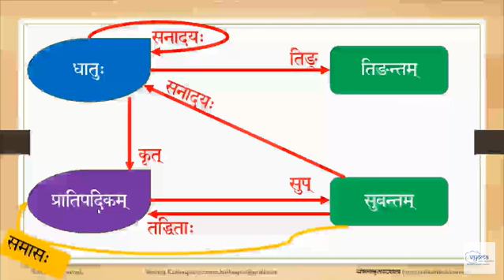

Sanskrit Notes
These pages are a collection of my notes, my translations, and other useful things I have collected as I learn Sanskrit. Click on the three lines on the top left (next to the paintbrush icon) to navigate to specific chapters.
Translations
- Exercises from Samskrta-Subodhini: A Sanskrit Primer" by Madhav Deshpande
- Translations of lessons in संस्कृतप्रथमादर्शः Reader - I
Sandhi
ToC
Notes from Deshpande
- Anusvāra Sandhi Rules
- Visarga Sandhi Rules
- Word-internal Sandhi rule: Change of न् to ण्
- Vowel Sandhi
- Consonant Sandhi Rules
Notes from Deshpande
Anusvāra Sandhi Rules
अनुस्वार
Final म् when followed by a consonant is changed to anusvāra. Example: रामम् वदति -> रामं वदति
The change does not happen if म् is followed by a vowel or is at the end of a sentence. In that case it has to remain as म्.
Optionally an anusvāra is further changes to a nasal consonant, which is homorganic with the following consonant. Change of anusvāra before य् व् and ल् is less common.
रामम् करोति -> रामं करोति -> रामङ्करोति
रामम् च -> रामं च -> रामञ्च
रामम् टीका -> रामं टीका -> रामण्टीका
रामम् तत्र -> रामं तत्र -> रामन्तत्र
रामम् पश्यति -> रामं पश्यति -> रामम्पश्यति
रामम् यत्र -> रामं यत्र -> रामय्ँयत्र
रामम् वा -> रामं वा -> रामव्ँवा
रामम् लता -> रामं लता -> रामल्ँलता
Visarga Sandhi Rules
1) The final visarga remains unchanged before क् ख् प् फ् E.g. रामः पतति।
2) The final visarga changes to a sibilant homorganic with the following unvoiced consonants marginally before श् ष् and स्.
A visarga becomes श् before च्, छ्, and श् - जनाः च -> जनाश्च
A visarga becomes ष् before ट्, ठ्, and ष् - जनाः टीकाम् -> जनाष्टीकाम्
A visarga becomes स् before त्, थ्, and स् - रामः तत्र -> रामस्तत्र
3) A visarga when preceded by आ and followed by a voiced consonant or vowel is dropped:
बालाः धावन्ति -> बाला धावन्ति।
जनाः अभितः -> जना अभितः।
4) When a विसर्ग is preceded by अ and followed by a voiced consonant, the sequence अः is changed to ओ :-
पुत्रः धावति -> पुत्रो धावति।
जनः वसति -> जनो वसति।
5) When preceded by अ and followed by any vowel except अ, the विसर्ग is dropped:
पुत्रः उभयतः -> पुत्र उभयतः।
धावतः इह -> धावत इह।
6) When a visarga is preceded by अ and followed by अ, अः is changed to ओ while the following अ is elided. This lost अ is indicated by the unpronounced sign ऽ called Avagraha
धावतः अश्वौ -> धावतोऽश्वौ।
पुत्रः अत्र -> पुत्रोऽत्र।
7) An exception to the visarga sandhi
The visarga after सः and एषः followed by a consonant does not follow any of the above sandhi-rules, but can be dropped optionally. Before vowels, it follows the normal sandhi rules:
सः तत्र -> स तत्र।
एषः गच्छति -> एष गच्छति।
सः अत्र -> सोऽत्र।
सः उभयतः -> स उभयतः।
एषः च -> एष च।
8) A visarga changes to र् if it is preceded by any vowel except अ or आ, and followed by a vowel or a voiced consonant:
मुनिः अत्र -> मुनिरत्र
मुनिः गच्छति -> मुनिर्गच्छति
तरोः + इति -> तरोरिति
तरोः + धावति -> तरोर्धावति
Word internal Sandhi rule
Change of न् to ण्
वन is a neuter gender word. It's प्रथमा विभक्ति बहुवचन form is वनानि. But for शरीर the equivalent form is शरीराणि. The change of न् to ण् is governed by this rule:
Dental न् changes to retroflex ण् if within the same word न् is preceded by र्, ऋ, or ष्, and is later followed either by a vowel or by व्, न्, म्, or य्. This applies despite the intervention of the following sounds: vowels, semi-vowels (except ल), क-series, प-series, and anusvara. If any other sounds intervene, the rule does not apply. Examples:
शरीरानि -> शरीराणि
नरानाम् -> नराणाम्
नृपानाम् -> नृपाणाम्
नरान् -> no change since न् is the word-final
अर्जुनेन -> no change since ज् intervenes
Vowel Sandhi
A) Lengthening of similar simple vowels:
सावर्णदीर्घसन्धिः
a) अ or आ + अ or आ -> आ
Examples: राम + अत्र -> रामात्र; माला + आकाशे -> मालाकाशे
b) इ or ई + इ or ई -> ई
Examples: उपरि + इति -> उपरीति; नदी + इति -> नदीति
c) उ or ऊ + उ or ऊ -> ऊ
Examples: गच्छतु + उपरि -> गच्छतूपरि; गच्छतु + ऊर्मिः -> गच्छतूर्मिः
d) ऋ or ॠ + ऋ or ॠ -> ॠ
Examples (rare): पितृ + ऋषिः -> पितॄषिः ; पितृ + ॠकारः -> पितॄकारः
B) Simple vowels folowed by dissimilar vowels:
यण् सन्धिः - इकोयणचि
a) इ or ई -> य् if followed by any other vowel.
Examples: उपरि + अश्वः -> उपर्यश्वः ; नदी + एव -> नद्येव
b) उ or ऊ -> व् if followed by any other vowel.
Example: धावतु + अत्र -> धावत्वत्र
c) ऋ or ॠ -> र् if followed by any other vowel
Example: पितृ + अत्र -> पित्रत्र
C) Formation of diphthongs:
गुणसन्धिः - a and b
वृद्धिसन्धिः - c and d
a) अ or आ + इ or ई -> ए
Examples: च + इति -> चेति मुनिना + इह -> मुनिनेह
b) अ or आ + उ or ऊ -> ओ
Examples: अत्र + उपरि -> अत्रोपरि मुनिना + उपरि -> मुनिनोपरि
c) अ or आ + ए or ऐ -> ऐ
Examples: च + एव -> चैव धेन्वा + एतद् -> धेन्वैतद्
d) अ or आ + ओ or औ -> औ
Examples: च + ओदनम् -> चौदनम् पिबाम + औषधम् -> पिबामौषधम्
D) Exceptions
Long ई, ऊ, and ए do not change if they occur at the end of dual forms of nouns or verbs. Similarly the final vowels of interjections like आ, हे and अहो remain unchanged.
Examples: मुनी + अत्र -> मुनी अत्र ; धेनू + इति -> धेनू इति; माले अत्र -> माले अत्र
Vowel sandhi rules (continued)
a.1 and b.1 are पूर्वरूपसन्धिः
a.2, b.2, c, d below are यान्तवान्तादेशसन्धिः as per Panini sutra एचोऽयवायावः
a.1) ए + अ = ए
Examples: लभते अत्र -> लभतेऽत्र वने अपि -> वनेऽपि
a.2) ए -> अय् before any vowel other than अ
Examples: वने इः -> वनयिह देवे इति -> देवयिति
b.1) ओ + अ -> ओ
Examples: प्रभो + अधुना -> प्रभोऽधुना गुरो + अत्र -> गोरोऽत्र
b.2) ओ -> अव् before any vowel other than अ
Examples: गुरो + इति -> गुरविति शिशो + इति -> शिशविति
c) ऐ -> आय्, before any vowel
Examples: तस्मै + इति -> तस्मायिति नद्यै + इति -> नद्यायिति
d) औ -> आव्, before any vowel
Examples: कवौ + इह -> कवाविह गुरौ + इति -> गुराविति
Note: When words ending in ओ or औ are combined with यादिप्रत्ययः then also ओ/औ will change to अव्/आव्.
Examples:
गो + यम् = ग् + अव् + यम् = गव्यम्
नौ + यम् = न् + आव् + यम् = नाव्यम्
e) य् and व् resulting from changes of ए, ओ, ऐ, and औ may be optionally elided, and in the case of such elision of य् and व्, no further sandhi occurs. Examples:
वने + इह -> वनयिह or वन इह
गुरो + इति -> गुरविति or गुर इति
तस्मै + इति -> तस्मायिति or तस्मा इति
कवौ + इति -> कवाविति or कवा इति
Due to various sandhi rules, occasionally identical sequences result from different original sequences, and only the larger sentential context can help identify the originals. Compare and contrast the following:
(बालाः इह) बाला इह तिष्ठन्ति। "The boys stand here."
(बालौ इह) बाला इह तिष्ठतः। "Two boys stand here."
(बाला इह) बाला इह तिष्ठति। "A girl stands here."
Final is the last letter of the first word and initial is the first letter of the second word
| Final ↓ / Initial → | अ | आ | इ | ई | उ | ऊ | ऋ | ॠ | ए | ऐ | ओ | औ |
|---|---|---|---|---|---|---|---|---|---|---|---|---|
| अ/आ | आ | आ | ए | ए | ओ | ओ | अर् | अर् | ऐ | ऐ | औ | औ |
| इ/ई | य | या | इ | ई | यु | यू | यृ | यॄ | ये | यै | यो | यौ |
| उ/ऊ | व | वा | वि | वी | ऊ | ऊ | वृ | वॄ | वे | वै | वो | वौ |
| ऋ/ॠ | र | रा | रि | री | रु | रू | ऋृ | ऋॄ | रे | रै | रो | रौ |
| ए | एऽ | अया | अयि | अयी | अयु | अयू | अयृ | अयॄ | अये | अयै | अयो | अयौ |
| or | अआ | अइ | अई | अउ | अऊ | अऋ | अऋॄ | अए | अऐ | अओ | अवौ | |
| ऐ | आय | आया | आयि | अयी | आयु | आयू | आयृ | आयॄ | आए | आयै | आयो | आयौ |
| or | आअ | आआ | आइ | आई | आउ | आऊ | आऋ | आऋॄ | आये | आऐ | आओ | आवौ |
| ओ | ओऽ | अवा | अवि | अवी | अवु | अवू | अवृ | अवॄ | अवे | अवै | अवो | अवौ |
| or | अआ | अइ | अई | अउ | अऊ | अऋ | अऋॄ | अए | अऐ | अओ | अऔ | |
| औ | आव | आवा | अवि | आवी | आवु | आवू | आवृ | आवॄ | आवे | आवै | आवो | आवौ |
| or | आअ | आआ | आइ | आई | आउ | आऊ | आऋ | आऋॄ | आए | आऐ | अओ | आऔ |
Consonant Sandhi Rules
1. unvoiced stop -> voiced stop, before a voiced consonant or a vowel
Examples:
वृक्षात् + अपतत् = वृक्षादपतत्
ग्रामात् + वनम् = ग्रामाद्वनम्
2. Voiced stop -> unvoiced stop, before a unvoiced consonant
Examples:
तद् + कमलम् = तत्कमलम्
एतद् + सर्वदा = एतत्सर्वदा
3. Initial श -> छ, optionally if preceded by a dental stop or nasal.
Examples:
तत् + शंसति = तच्छंसति
तान् + शंसति = ताञ्छंसति
Optionally: तच्शंसति and ताञ्शंसति (rare in texts).
4. Dental Consonant -> corresponding retroflex Consonant, before a retroflex Consonant.
Examples:
तत् + टीका = तट्टीका
तद् + डमरुः = तड्डमरुः
(देवः = ) देवस् + टीका -> देवष्टीका
5. Dental Consonant -> corresponding palatal Consonant, before a palatal consonant
Examples:
ग्रामात् + च = ग्रामाच्च
ग्रामात् + जायते = ग्रामाज्जायते
(देवः = ) देवस् + च = देवश्च
6. Dental stop -> ल् before ल्.
Examples:
तद् + लभते = तल्लभते
ग्रामात् + लोकः = ग्रामाल्लोकः
7. Dental न् -> ल्ँ before ल्
Examples:
तान् + लभते = ताल्ँलभते
देवान् + लोकः = देवाल्ँलोकः
8. Stop -> corresponding nasal, before nasal, optionally
Examples:
तद् + न = तन्न
वाक् + मम = वाङ्मम
तद् + मित्रम् = तन्मित्रम्
Optionally: तद्न, वाग्मम, and तद्मित्रम् (rare in texts)
9. ह् after a stop is replaced by the corresponding voiced aspirated stop, optionally:
Examples:
तद् + हि = तद्धि
वाक् + हि = वाग्घि
Optionally तद्हि and वाग्हि (rare in texts).
10. Final ङ्, ण्, and न् are doubled, after a short vowel and before any vowel
Examples:
अपतन् + इह = अपतन्निह
अगच्छन् + आकाशम् = अगच्छन्नाकाशम्
11. Final न्, before an unvoiced dental, palatal, or retroflex stop, is replaced by an anusvara plus a sibilant homorganic with the stop. Examples:
देवान् + तत्र = देवांस्तत्र
देवान् + च = देवांश्च
देवान् + टीका = देवांष्टीका
12. Final र्, original or derived from a visarga, is deleted, before an initial र्, and the previous simple vowel is lengthened. Examples:
पुनर् + सामः = पुना रामः
मतिः + रामः = मती रामः
शिशुः + रामः = शिशू रामः
13. If a word ending in a short vowel is followed by छ, a च् is inserted between the two. This insertion is optional after a long vowel. Examples:
कवि + छात्रः = कविच्छात्रः
लक्षमी + छाया = लक्ष्मीच्छाया or लक्ष्मीछाया
Notes from other sources
Maheshvara Sutra
महेश्वर सूत्राणि
अइउण् । ऋऌक् । एओङ् । ऐऔच् ।
हयवरट् । लण् । ञमङणनम् ।
झभञ् । घढधष् । जबगडदश् ।
खफछठथचटतव् । कपय् ।
शषसर् । हल् ।
Memorize the above sutras. They are useful in learning Sandhi.
१. यण् सन्धिः - इकोयणचि
इकोयणचि ६.१.७७ - इकः स्थाने यण् स्यादचि संहितायां विषये। इको यण् स्यादसवर्णेऽचि परे इति सूत्रस्य फलितोऽर्थः इति ज्ञेयम्।
The Panini sutra for यण्सन्धिः is इकोयणचि. The इक्, यण् and अच् terms in this sutra refer to portions of the Maheshvara sutra highlighted in red below.
अइउण् । ऋऌक्। - इक्
हयवरट् । लण् । - यण्
अइउण् । ऋऌक् । एओङ् । ऐऔच् । - अच्
इक् refers to vowels इ ई उ ऊ ऋ ॠ लृ
यण् refers to vowels य व र ल
अच् refers to all vowels अ आ इ ई उ ऊ ऋ लृ ए ऐ ओ औ
This sutra says that the vowels इ/ई, उ/ऊ, ऋ/ॠ and लृ if followed by any vowel of different type (i.e. different from this vowel असवर्णस्वरः) it must be (आदेशः) replaced (correspondingly) by य्, व्, र्, or ल्.
| यण् सन्धिः | |||
|---|---|---|---|
| इई | उऊ | ऋॠ | ऌ |
| य् | व् | र् | ल् |
Examples:
प्रति + एकम् = प्रत् + य् + एकम् = प्रत्येकम् नदी + अत्र = नद् + य् + अत्र = नद्यत्र
मनु + अन्तरम् = मन् + व् + अन्तरम् = मन्वन्तरम् वधू + आगमनम् = वध् + व् + आगमनम् = वध्वागमनम्
पितृ + इच्छा = पित् + र् + इच्छा = पित्रिच्छा
घस्लृ + आदेशः = घस् + ल् + आदेशः = घस्लादेशः (uncommon)
२. यान्तवान्तादेशसन्धिः
एचोऽयवायावः - ६.१.७८ एचः क्रमाद् अय् अव् आय् आव् एते स्युरचि।
यान्तौ वान्तौ च = अय् आय् अव् आव्
| यान्तवान्तादेशसन्धिः | |||
|---|---|---|---|
| ए | ऐ | ओ | औ |
| अय् | आय् | अव् | आव् |
If ए ऐ ओ औ are followed by स्वाराः it changes as shown in the above table.
Examples:
हरे + ए = हर् + अय् + ए = हरये हरे + आगच्छ = हर् + अय् + आगच्छ = हरयागच्छ
नै + अकः = न् + आय् + अकः = नायकः तस्यै + इदम् = तस्य् + आय् + इदम् = तस्यायिदम्
विष्णो + ए = विष्ण् + अव् + ए = विषणवे गुरो + आदिश = गुर् + अ्व + आदिश = गुरावादिश
पौ + अकः = प् + आव् + अकः = पावकः
बालकौ + आगतौ = बालक् + आव् + आगतौ = बालकावागतौ
फले + इच्छा = फलयिच्छा / फल इच्छा
कटे + उपवेशनम् = कटयुपवेशनम् / कट उपवेशनम्
Note from teacher: There is another sutra that provides an exception to एचोऽयवायावः. As per सूत्र "एङः पदान्तादति" the एङ् (ए ओ) at the end of the word followed by अत् (ह्रस्व अ) the both will get common replacement of पूर्वरूप (ए, ओ)
२.२. यान्तवान्तादेशसन्धिः
यकारादिप्रत्यये परे ओ औ इत्येतयोः स्थाने क्रमाद् अव् आव् एतौ आदेशौ भवतः।
When a यकार प्रत्यय is added to words ending in ओ or औ then it changes as below
ओ/औ + यादिप्रत्ययः -
| यान्तवान्तादेशसन्धिः | |
|---|---|
| ओ | औ |
| अव् | आव् |
Examples:
गो + यम् = ग् + अव् + यम् = गव्यम्
नौ + यम् = न् + अव् + यम् = नव्यम्
इदमवधेयम् - स्वरसन्धिषु यण्सन्धौ यान्तवान्तादेशसन्धौ च एकस्य पूर्वस्थितस्य वर्णस्य आदेशौ भवति। इदं सन्धिद्वयं विहाय अन्यत्र स्वरसन्धिषु पूर्वपरयोः स्थाने एकादेशो भवति।
Know this: Among swara sandhis यणसन्धि and यान्तवान्तादेशसन्धि one previous sound (letter) is replaced. Other than these two sandhis other swara sandhis the last letter (of the first word) and the first letter (of the second woord) are replaced with the same change.
How do we decide which Panini sutra overrides another one?
First we have to look for the सूत्र number. If सूत्रs in first 7 अध्यायs and the 1st quarter of 8th अध्याय then first rule is more powerful than later on. In last 3 quarters of 8th अध्याय then it is reverse. Later is powerful than previous.
In case of one sutra in सपादसप्ताध्यायी (first 7 chapters and 1st quarter of 8th) and another in त्रिपादी (last 3 quarters of 8th अध्यायी) then सपादसप्ताध्यायी is powerful.
३. गुणसन्धिः
गुणः = ए ओ अर् अल्
| गुणसन्धिः | |||
|---|---|---|---|
| अ/आ + इ/ई | अ/आ + उ/ऊ | अ/आ + ऋ/ॠ | अ/आ + ऌ |
| ए | ओ | अर् | अल् |
१.१.२. अदेङ्गुणः - अत् एङ् च गुणसंज्ञः स्यात्।
६.१.८७. आद् गुणः - अवर्णादचि परे पूर्वपरयोरेको गुणः आदेशः स्यात्संहितायाम्। अवर्णादिकि परे इति सूत्रस्य फलितोऽर्थः इति ज्ञेयम्।
देव + इन्द्रः = देव् + ए + न्द्रः = देवेन्द्रः
गण + ईशः = गण् + ए + शः = गणेशः
महा + इन्द्रः = मह् + ए + न्द्रः = महेन्द्रः
महा + ईशः = मह + ए + शः = महेशः
सूर्य + उदयः = सूर्य् + ओ + दयः = सूर्योदयः
एक + ऊनविंशतिः = एक् + ओ + नविंशतिः = एकोनविंशतिः
महा + उत्सवः = मह + ओ + त्सवः = महोत्सवः
महा + ऊर्मिः = मह + ओ + र्मिः = महोर्मिः
सप्त + ऋषिः = सप्त् + अर् + षयः = सप्तर्षयः
महा + ऋषिः = मह + अर् + षिः = महर्षिः
तव + ऌकारः = तव् + अल् + कारः = तवल्कारः
महा + ऌकारः = मह् + अल् + कारः = महल्कारः
वृद्धिसन्धिः
| वृद्धिसन्धिः | |
|---|---|
| अ/आ + ए/ऐ | अ/आ + ओ/औ |
| ऐ | औ |
सुभाषितम्
प्राणस्य बीजं सकलस्य वायुर्ध्यानं हरेः सर्वरुजां च जायः।
आहारशुद्ध्या खल दीर्घमायुः बीजं विकारस्य धियो नु मायुः॥
- नागराजस्य (12 April 2022 सुधर्मा)
The basic cause of life of every living being is air. Meditation on Lord Hari is the best medication for all diseased. Long life is attained by consuming clean food. The cause of aberration of intellect is Pitta (bile).
Tenses and Moods - लकार
Lakaras convey the sense of time (tense) and sentiment (भाव). They are split into two groups - (1) कालवाचकाः (tense) and (2) भाववाचकाः (mood)
There are ten lakaras in Sanskrit.
- लट् लकार - Present tense
- लङ् लकार - Past tense (past action but not within a day; अनद्यतनभूतकालः)
- लिट् लकार - Past tense (ancient past, परोक्षभूतकालः)
- लुङ लकार - Past tense (simple past)
- लिङ् लकार - Potential/Optative mood
- लोट् लकार - Imperative mood
- लुट् लकार - Future tense (अनद्यतनभविष्यतकाल)
- लृट् लकार - Future tense (सामान्यभविष्यत्काल, simple future)
- लृङ् लकार - क्रियातिपत्ति (non-realization of an action)
- लेट् लकार - both tense and mood
Six lakaras are कालवाचकाः. The present tense is called लट् लकार. In Sanskrit there are 3 kinds of past and 2 kinds of future tense. Note: Tenses apply to verbs only.
लिट् लङ् and लुङ् are past tense. लुट् and लृट् are used for future tense.
The lakaras लोट्, लिङ् and लृङ् are used to represent moods. These three are भाववाचकाः. लोट् and लिङ् represent the moods/sentiments like - आज्ञा (order), प्रार्थना (request), इच्छा (wish). The लृङ् लकार is used to express non-realization of an action.
लेट् लकारः is both कालवाचकः and भाववाचकः
Here is a sloka to remember all the लकार:
लट् वर्तमाने लेट् वेदे भूते लुङ् लङ् लिटस्तथा।
विद्याशीषोस्तु लिङ् लोटौ लुट् लृट् लृङ् च भविष्यति।।
References
- Verbs in Sanskrit - Overview of the 10 Lakaaras by Neelesh Bodas
- Verbs in Sanskrit - Overview of the 10 Dhaatu Ganas by Neelesh Bodas
Examples
Here are examples with meaning for the same धातु in all लकार. All examples are in प्रथम पुरुष एकवचन
| लकार | Sentence | Meaning | Tense |
|---|---|---|---|
| लट् | सः पठति | He reads. | Present |
| लङ् | सः अपठत् | He read. | Past |
| लृट् | सः पठिष्यति | He will read. | Future |
The above three are the commonly used in contemporary Sanskrit.
Other forms that convey time:
The लिट् and लुङ् forms are also for past tense. लिट् is the ancient past and is frequently encountered in texts like Ramayana and Mahabharata
लिट् - सः पपाठ - He read (in an ancient time)
लुङ् (past) - अपाठीत
Future also has an additional form: लुट् (future) - पठिता
There are three forms that convey mood instead of time.
पठतु - लोट्
पठेत् - लिङ्
अपठिष्यत - लृङ्
One special form only occurs in the Vedas
लेट - पठाति This form is encountered only in the Vedas.
Present tense - वर्तमान काल
| पुरुष | एकवचन | द्विवचन | बहुवचन | पुरुष | एकवचन | द्विवचन | बहुवचन |
|---|---|---|---|---|---|---|---|
| गम् धातु परस्मैपदि | लभ् धातु आत्मनेपदि | ||||||
| प्रथम पुरुष | गच्छति | गच्छतः | गच्छन्ति | प्रथम पुरुष | लभते | लभेते | लभन्ते |
| मध्यम पुरुष | गच्छसि | गच्छथः | गच्छथ | मध्यम पुरुष | लभसे | लभेथे | लभध्वे |
| उत्तम पुरुष | गच्छामि | गच्छावः | गच्छामः | उत्तम पुरुष | लभे | लभावहे | लभामहे |
| पुरुष | एकवचन | द्विवचन | बहुवचन |
|---|---|---|---|
| आस् धातु आत्मनेपदि (to sit) | |||
| प्रथम पुरुष | आस्ते | आसाते | आसन्ते |
| मध्यम पुरुष | आस्से | आसाथे | आध्वे |
| उत्तम पुरुष | आसे | आस्वहे | आस्महे |
Past tense - भूत काल
All three past tenses are together are called भूत काल.
Past action that ended before today: Any past action that ended before today but could have been witnessed by the speaker/listener (अनद्यतन भूत). This past is called लङ् लकार. Example: He read. = सः अपठत्।
Strictly in a grammatical sense अनद्यतन भूत refers to events in the past that are not recent but not ancient. अद्यतन is a 24 hour period - sunrise to sunrise, or midnight to mid-night, or end of day to end of next day. So अनद्यतन भूत are events that happened in the past but not during the अद्यतन.
However, in present day usage लङ् लकार is used generally as past tense.
Distant/ancient past: Events in the distant past that have not been witnessed by the speaker/listener (परोक्ष भूत) are called लिट् लकार. Usually लिट् लकार is encountered in old treatises and texts like Ramayana and Mahabharata. In those texts लङ् लकार is not prominent. Example:
There was a king named Dasharatha.
दशरथः नाम राजा बभूव।
Simple past: Simple past (सामान्य भूत), called लुङ् लकार, is used for events that happend in the past.
| Past Tense | |
|---|---|
| लङ् लकार | Past events that happened before today but not ancient (अनद्यतन भूत) |
| लिट् लकार | ancient past or events not witnessed by you (परोक्ष भूत) |
| लुङ् लकार | simple past (सामान्य भूत) |
परोक्षः = अक्ष्ण परः - That which is beyond our visibility. i.e. not seen by the speaker but have heard about it.
लुङ् and लिट् लकार is very common in epics like Ramayana, Mahabharatha, Devi Bhagavatam etc. In that class of poetry and prose लङ् लकार is not usually found.
Example of लङ् लकार:
सः ह्यः मन्दिरम् अगच्छत्। - Correct
सः अद्य प्रातः मन्दिरम् अगच्छत्। - Incorrect from a grammer point of view. But has become generally accepted in spoken Sanskrit. The correct version is सः अद्य प्रातः मन्दितम् अगमत्।
अगमत् is लुङ् लकार.
लिट् लकार example: रामः वनं जगाम।
Note that लिट् can also be used for events that happened yesterday or day before that you did not see. Many people say that लिट् लकार is used for indicating things in the very past but that is not correct. Anything that you did not see you should use लिट् लकार for indicating it.
More examples:
सः वनम् जगाम।
भवान् किं चकार?
छात्रः पाठम् पपाठ।
प्रातः सूर्योदयः बभूव।
सा उत्तरम् उवाद।
किं कविः काव्यम् लिलेख?
लङ् लकार - अनद्यतन भूत (past imperfect tense)
Events that happened in the past and prior to one day. This is also referred to as imperfect past and used for events witnessed by the speaker.
| पुरुष | एकवचन | द्विवचन | बहुवचन | पुरुष | एकवचन | द्विवचन | बहुवचन |
|---|---|---|---|---|---|---|---|
| पठ् धातु परस्मैपदि | लभ् धातु आत्मनेपदि | ||||||
| प्रथम पुरुष | अपठत् | अपठताम् | अपठन् | प्रथम पुरुष | अलभत | अलभेताम् | अलभन्त |
| मध्यम पुरुष | अपठः | अपठतम् | अपठत | मध्यम पुरुष | अलभथाः | अलभेथाम् | अलभध्वम् |
| उत्तम पुरुष | अपठम् | अपठाव | आपठाम | उत्तम पुरुष | अलभे | अलभावहि | अलभामहि |
लिट् लकार - परोक्ष भूत
The most commonly encountered usage of लिट् लकार will be प्रथम एकवचन and प्रथम बहुवचन.
| पुरुष | एकवचन | द्विवचन | बहुवचन | पुरुष | एकवचन | द्विवचन | बहुवचन |
|---|---|---|---|---|---|---|---|
| पठ् धातु | गम् धातु | ||||||
| प्रथम पुरुष | पपाठ | पेठतुः | पेठुः | प्रथम पुरुष | जगाम | जग्मतुः | जग्मुः |
| मध्यम पुरुष | पेठिथ | पेठथुः | पेठ | मध्यम पुरुष | जगमिथ | जग्मथुः | जग्म |
| उत्तम पुरुष | पपाठ | पेठिव | पेठिम | उत्तम पुरुष | जगाम | जग्मिव | जग्मिम |
| पुरुष | एकवचन | द्विवचन | बहुवचन |
|---|---|---|---|
| भू धातु (to be) | |||
| प्रथम पुरुष | बभूव | बभूवतुः | बभूवुः |
| मध्यम पुरुष | बभूविथ | बभूवतुः | बभूव |
| उत्तम पुरुष | बभूव | बभूविव | बभूविम |
लुङ् लकार - सामान्य भूत (simple past tense)
सः वनम् अगमत्।
भवान् किम् अकर्षीत्?
छात्रः पाठम् अपाठीत्।
प्रातः सूर्योदयः अभूत्।
सा उत्तरम् अवादीत्।
किं कविः काव्यम् अलेखीत्?
Future Tense - भविष्यत्काल
There are two types of future tense in Sanskrit - लृट्लकारः (सामान्यभविष्यत्कालम्) and लुट्लकारः (अनद्यतनभविष्यत्कालम्).
अनद्यतन = न अद्यतन (not now).
अनद्यतनभविष्यत्काल are actions that will happen tomorrow or after (day after, next month etc.). If you say "I am going to play cricket in the evening.", that is not अनद्यतन.
Example of लुट् लकारः (अनद्यतनभविष्यत्कालः): रामः श्वः वनं गन्ता।
From a grammer point of view this sentence is incorrect: रामः श्वः वनं गमिष्यति।
रामः अद्य रात्रौ वनं गमिष्यति। This is correct because the action is happening in the future but today. सामान्यभविष्यत्कालः is used for cases where it is not अनद्यतन or you don't know.
This sentence is correct: रामः वनं गमिष्यति।
If there is a reference to when the action is going to happen and that is tomorrow or later then you must use लुट्लकार.
However, in today's spoken Sanskrit the use of लुट्लकार is almost extinct. लृट् लकार is used universally for future tense.
प्रयोगशरणाः व्य्याकरणाः। Grammer cannot dicatate the language, the language dictates the grammer. While the grammer recommends using लुट् लकार for events happening after today in practice लृट् लकार is used and accepted in speech and prose.
लृट् लकार:
| पुरुष | एकवचन | द्विवचन | बहुवचन | पुरुष | एकवचन | द्विवचन | बहुवचन |
|---|---|---|---|---|---|---|---|
| (स्यति - to finish) धातु परस्मैपदि | धातु आत्मनेपदि | ||||||
| प्रथम पुरुष | स्यति | स्यतः | स्यन्ति | प्रथम पुरुष | स्यते | स्येते | स्यन्ते |
| मध्यम पुरुष | स्यसि | स्यथः | स्यथ | मध्यम पुरुष | स्यसे | स्येथे | स्यध्वे |
| उत्तम पुरुष | स्यामि | स्यावः | स्यामः | उत्तम पुरुष | स्ये | स्यावहे | स्यामहे |
लुट्लकारः उदाहरणानि
रामः वनं श्वः गन्ता।
भवान अग्रिममासे गीतां पठिता वा?
अहम् परश्वः परीक्षां लेखितास्मि।
वयम् मङ्लवासरे मिलित्वा यज्ञं कर्तास्मः।
त्वम् अग्रिमवर्षे कुत्र क्रीडितासि?
युयम् श्वः परश्वः वा चलचित्रम् द्रष्टास्थ।
| पुरुष | एकवचन | द्विवचन | बहुवचन |
|---|---|---|---|
| पठ् धातु आत्मनेपदि (to read) | |||
| प्रथम पुरुष | पठिता | पठितारौ | पठितारः |
| मध्यम पुरुष | पठितासी | पठितास्थः | पठितास्थ |
| उत्तम पुरुष | पठितास्मि | पठितास्वः | पठितास्मः |
भाववाचक लकारः - Moods
Imperative mood - लोट् लकार
The imperative mood is used to express a command, advice, a wish. a request etc. A negative command or prohibition is expressed by using मा followed by the imperative form. Example: मा पिबतु (You do not drink).
| पुरुष | एकवचन | द्विवचन | बहुवचन | पुरुष | एकवचन | द्विवचन | बहुवचन |
|---|---|---|---|---|---|---|---|
| पठ् धातु परस्मैपदि | लभ् धातु आत्मनेपदि | ||||||
| प्रथम पुरुष | पठतु/पठतात् | पठताम् | पठन्तु | प्रथम पुरुष | लभताम् | लभेताम् | लभन्ताम् |
| मध्यम पुरुष | पठ/पठतात् | पठतम् | पठत | मध्यम पुरुष | लभस्व | लभेथाम् | लभध्वम् |
| उत्तम पुरुष | पठानि | पठाव | पठाम | उत्तम पुरुष | लभै | लभावहै | लभामहै |
The -तात् forms of प्रथम & मध्यम पुरुष are used in expressing a blessing. Example: सुखं भवतात् - Let there be happiness.
| पुरुष | एकवचन | द्विवचन | बहुवचन |
|---|---|---|---|
| आस् धातु आत्मनेपदि (to sit) | |||
| प्रथम पुरुष | आस्ताम् | आसाताम् | आसताम् |
| मध्यम पुरुष | आस्स्व | आसाथाम् | आध्वम् |
| उत्तम पुरुष | आसै | आसावहै | आसामहै |
Examples:
- सः पठतु। - वह पढे।
- आज्ञा (order) – त्वं गृहं गच्छ। (तुम घर जाओ)
- प्रार्थना (request) – भवान मम गृहं आगच्छतु। (आप मेरे घर मे आयें।)
- अनुमति (permission) – अहं कुत्र गच्छानि? (मै कहाँ जाऊँ?)
- आशीर्वाद (blessing) – त्वं चिरं जीव। (तुम बहुत समय तक जियो।)
More examples
आज्ञा :- शिक्षकः छात्रम् आज्ञापयति - एतत् पुस्तकं पठ।
प्रश्नः :- छात्रः पृच्छति - किम् अहम् व्याकरणम् पठानि?
प्रार्थना :- पिता आवार्यं वदति - मम पुत्रं पाठयतु भवान्।
आमन्त्रणम् :- रामः वदति - श्वः भवान् मम गृहम् आगच्छतु।
पद्धतिः (process) :- देहलीनगरं अनेन मार्गेण गच्छतु।
आशीर्वादः :- विजयी भव।
Potential/Optative mood - लिङ् लकार
Optative mode is used to indicate wish, advice, a request, a possibility, or the near future. It is also called potential mood. It is also used for conditional clauses, e.g. “If he would go…”. In Sanskrit Optative mood is called लिङ् लकारः (विधिलिङ्)
| पुरुष | एकवचन | द्विवचन | बहुवचन | पुरुष | एकवचन | द्विवचन | बहुवचन |
|---|---|---|---|---|---|---|---|
| पठ् धातु परस्मैपदि | लभ् धातु आत्मनेपदि | ||||||
| प्रथम पुरुष | पठेत् | पठेताम् | पठेयुः | प्रथम पुरुष | लभेत | लभेयाताम् | लभेरन् |
| मध्यम पुरुष | पठेः | पठेतम् | पठेत | मध्यम पुरुष | लभेताः | लभेयाथाम् | लभेध्वम् |
| उत्तम पुरुष | पठेयम् | पठेव | पठेम | उत्तम पुरुष | लभेय | लभेवहि | लभेमहि |
सः पठेत्। (विधिलिङ्)
उसे पडना चाहिए।
विधिनिमन्त्रणामन्त्रणाधीष्टसंप्रश्रप्रार्थनेषु लिङ् – विधि (चाहिए), निमन्त्रण, आदेश, विधान, उपदेश, प्रश्र तथा प्रार्थना आदि अर्थों का बोध कराने के लिये विधि लिङ् लाकार का प्रयोग किया जाता है। जैसे –
- विधि – सत्यं ब्रूयात। (सत्य बोलना चाहिये) प्रियं ब्रूयात्। (प्रिय बोलना चाहिये)
- निमन्त्रण – भवान् अद्य अत्र भक्षयेत्। (आप आज यहाँ भोजन करें)
- आदेश – भृत्यः क्षेत्रे गच्छेत्। (नौकर खेत पर जाये।)
- प्रश्र – त्वं किम कुर्याः? (तुमहे क्या करना चाहिये?)
- इच्छा – यूयं सुखि भवेत्। (तुम खुश रहो।)
There are two types of लिङ्लकार - विधिलिङ् and आशीर्लिङ्.
विधिलिङ्लकार can be used in every situation a लोट् लकार can be used. The two are completely interchangeable.
आशीर्लिङ् is used for अप्राप्यस्य इच्छा - something you want but cannot have easily. Examples:
- अहम् राष्ट्रपतिः भूयासम् (I wish to be the President)
- मम शत्रुः म्रियात् (I wish for my enemy to die.)
- विष्णुः मह्यम् आशीषः देयात्
- सा मया सह विवाहं क्रियात्
- अहम् भगवद्गीता स्मर्यासम्
लृङ् लकारः - क्रियातिपत्तिः
Example: If this happens then that will happen
१. यदि वर्षा अभविष्यत्, तर्हि सस्यानि अवर्धिष्यन्त।
If there is rain then the crops will have flourished.
२. यदि कृष्णः गीतां न अवदिष्यत् तर्हि अर्जुनः न अयोत्स्यत।
If Krishna had not told the Geetha, Arjuna would not have fought the battle.
३. यदि कैकयी वरं न अप्राक्षीत् तर्हि रामः वनं न अगमिष्यत्।
If Kaikeyi had not got the boon, then Rama would not have gone to the forest.
४. अहम् अध्ययनम् अकरिष्यम् चेत् परीक्षाम् अपि अलेखिष्यम्।
If I would have studied then I will would have written the exam.
OR
If I will study then I will write the exam.
Both above meanings are correct. The take away is that लृङ् is not referring to past, present or future. It refers to क्रियातिपत्ति (non-realization of an action).
५. अभिमन्युः चक्रव्यूहं सम्यक् अज्ञास्यत् वेत् सः कौरवेभ्यः न पराजेष्यत।
Note: It is not that only लृङ् लकार should be used with यदि-तर्हि. The लृङ् लकार is for situations where you say if something that did not happen or is difficult to happen happened then blah-blah. Generally when using लृङ् लकार the sentence will have यदि-तर्हि and चेत्.
लेट् लकारः
लेट् लकारः केवलं वेदेषु प्रयुज्यते। लौकिकसंस्कृते अस्य प्रयोगः न भवति।
This lakara cannot be used in any of your sentences. This lakara is used only in the Vedas. The forms used in the Vedas are the only examples of लेट् लकार. You cannot create your own examples.
वेदेषु अयं लकारः भिन्नेषु अर्थेषु प्रयुज्यते - वर्तमानकालः, आज्ञा, विधिः आदयः। Sometimes as कालवाचक and sometimes as भाववाचक.
उदाहरणानि -
१. नेता इन्द्रो नेषत्।
नेता - leader इन्द्रो - Indra नेषत् - to sprinkle water
नेषत् is लेट् लाकारः because it cannot be derived from the other 9 lakaras.
२. विद्युत् पताति।
विद्युत् - lightning पताति - falls (पतति)
So in लट् लकार we say विद्युत् पतति but in लेट् we say विद्युत् पताति
३. प्रजापतिः उदधिं च्यावयाति।
च्यावयाति - to force to move
In classical Sanskrit this will be प्रजापतिः उदधिं च्यावयति
Key take away: The Panini grammer applies to classical Sanskrit. The grammer of the Vedas including लेट् लकारः cannnot be derived using Panini grammer. To understand the meaning we have to ask Veda experts.
Table template - do not erase
| पुरुष | एकवचन | द्विवचन | बहुवचन |
|---|---|---|---|
| प्रथम पुरुष | |||
| मध्यम पुरुष | |||
| उत्तम पुरुष |
शब्द रुप
This is a list of commonly used and some uncommon शब्द रुप
Masculine (पुंल्लिङ्गः) nouns
| अकारान्तः पुंल्लिङ्गः राम शब्दः | |||
|---|---|---|---|
| विभक्ति | एकवचन | द्विवचन | बहुवचन |
| प्रथमा | रामः | रामौ | रामाः |
| द्वितीया | रामम् | रामौ | रामान् |
| तृतीया | रामेण | रामाभ्याम् | रामैः |
| चतुर्थी | रामाय | रामाभ्याम् | रामेभ्यः |
| पञ्चमी | रामात् | रामाभ्याम् | रामेभ्यः |
| षष्ठी | रामस्य | रामयोः | रामाणाम् |
| सप्तमी | रामे | रामयोः | रामेषु |
| सम्बोधन | हे राम | हे रामौ | हे रामाः |
Note: All अकारान्तः पुंल्लिङ्गः शब्दाः will be like राम शब्दः
| इकारान्तः पुंल्लिङ्गः हरि शब्दः (Vishnu) | इकारान्तः पुंल्लिङ्गः पति शब्दः (Master, Husband) | ||||||
|---|---|---|---|---|---|---|---|
| विभक्ति | एकवचन | द्विवचन | बहुवचन | विभक्ति | एकवचन | द्विवचन | बहुवचन |
| प्रथमा | हरिः | हरी | हरयः | प्रथमा | पतिः | पती | पत्यः |
| द्वितीया | हरिम् | हरी | हरीन् | द्वितीया | पतिम् | पती | पतीन् |
| तृतीया | हरिणा | हरिभ्याम् | हरिभिः | तृतीया | पत्या | पतिभ्याम् | पतिभिः |
| चतुर्थी | हरये | हरीभ्याम् | हरिभ्यः | चतुर्थी | पत्ये | पतिभ्याम् | पतिभ्यः |
| पञ्चमी | हरेः | हरीभ्याम् | हरिभ्यः | पञ्चमी | पत्युः | पतीभ्याम् | पतिभ्यः |
| षष्ठी | हरेः | हर्योः | हरीणाम् | षष्ठी | पत्युः | पत्योः | पतीनाम् |
| सप्तमी | हरौ | हर्योः | हरिषु | सप्तमी | पत्यौ | पत्योः | पतीषु |
| सम्बोधन | हे हरे | हे हरी | हे हरयः | सम्बोधन | हे पते | हे पती | हे पतयः |
Note: Most इकारान्तः पुंल्लिङ्गः शब्दाः will be like हरि. When पति occurs at the end of compounds like नरपति it behaves in a normal fashion and follows the pattern like हरि. The feminine form of पति is पत्नी and it follows the same form as नदी.
| इकारान्तः पुंल्लिङ्गः सखि (m) (friend) शब्दः | |||
|---|---|---|---|
| विभक्ति | एकवचन | द्विवचन | बहुवचन |
| प्रथमा | सखा | सखायौ | सखायः |
| द्वितीया | सखायम् | सखायौ | सखीन् |
| तृतीया | सख्या | सखिभ्याम् | सखिभिः |
| चतुर्थी | सख्ये | सखिभ्याम् | सखिभ्यः |
| पञ्चमी | सख्युः | सखिभ्याम् | सखिभ्यः |
| षष्ठी | सख्युः | सख्योः | सखीनाम् |
| सप्तमी | सख्यौ | सख्योः | सखिषु |
| सम्बोधन | हे सखे | हे सखायौ | हे सखायः |
Note: Most इकारान्त पुंल्लिङ्गः are similar to हरि शब्दः. But some, like पति and सखि, are different. The word सखि is masculine a form meaning friend. सखी is a feminine word that also means friend (female). It follows the same form as नदी
| उकारान्तः पुंल्लिङ्गः गुरु शब्दः (Teacher) | |||
|---|---|---|---|
| विभक्ति | एकवचन | द्विवचन | बहुवचन |
| प्रथमा | गुरुः | गुरू | गुरवः |
| द्वितीया | गुरुम् | गुरू | गुरून् |
| तृतीया | गुरुणा | गुरुभ्यां | गुरुभिः |
| चतुर्थी | गुरवे | गुरुभ्यां | गुरुभ्यः |
| पञ्चमी | गुरोः | गुरुभ्यां | गुरुभ्यः |
| षष्ठी | गुरोः | गुर्वोः | गुरूणाम् |
| सप्तमी | गुरौ | गुर्वौः | गुरुषु |
| सम्बोधन | हे गुरो | हे गुरू | हे गुरवः |
| ऋकारान्तः पुंल्लिङ्गः दातृ शब्दः | ऋकारान्तः पुंल्लिङ्गः पितृ शब्दः | ||||||
|---|---|---|---|---|---|---|---|
| विभक्ति | एकवचन | द्विवचन | बहुवचन | विभक्ति | एकवचन | द्विवचन | बहुवचन |
| प्रथमा | दाता | दातारौ | दातारः | प्रथमा | पिता | पितरौ | पितरः |
| द्वितीया | दातारम् | दातारौ | दातॄन् | द्वितीया | पितरम् | पितरौ | पितॄन् |
| तृतीया | दात्रा | दातृभ्यां | दातृभिः | तृतीया | पित्रा | पितृभ्यां | पितृभिः |
| चतुर्थी | दात्रे | दातृभ्यां | दातृभ्यः | चतुर्थी | पित्रे | पितृभ्यां | पितृभ्यः |
| पञ्चमी | दातुः | दातृभ्यां | दातृभ्यः | पञ्चमी | पितुः | पितृभ्यां | पितृभ्यः |
| षष्ठी | दातुः | दात्रोः | दातॄणाम् | षष्ठी | पितुः | पित्रोः | पितॄणाम् |
| सप्तमी | दातरि | दात्रौः | दातृषु | सप्तमी | पितरि | पित्रोः | पितृषु |
| सम्बोधन | हे दातः | हे दातारौ | हे दातारः | सम्बोधन | हे पितः | हे पितरौ | हे पितरः |
| ऐकारान्तः पुंल्लिङ्गः रै शब्दः (wealth) | |||
|---|---|---|---|
| विभक्ति | एकवचन | द्विवचन | बहुवचन |
| प्रथमा | राः | रायौ | रायः |
| द्वितीया | रायम् | रायौ | रायः |
| तृतीया | राया | राभ्याम् | राभिः |
| चतुर्थी | राये | राभ्याम् | राभिः |
| पञ्चमी | रायः | राभ्याम् | राभ्यः |
| षष्ठी | रायः | रायोः | रायाम् |
| सप्तमी | रायि | रायोः | रासु |
| सम्बोधन | हे राः | हे रायौ | हे रायः |
There are a few masculine words which end in आ, ई, and ऊ. These are also irregular declinations.
| आकारान्तः पुंल्लिङ्गः गोपा (cowherd) शब्दः | ईकारान्तः पुंल्लिङ्गः सुधी (intelligent) शब्दः | ||||||
|---|---|---|---|---|---|---|---|
| विभक्ति | एकवचन | द्विवचन | बहुवचन | विभक्ति | एकवचन | द्विवचन | बहुवचन |
| प्रथमा | गोपाः | गोपौ | गोपाः | प्रथमा | सुधीः | सुधियौ | सुधियः |
| द्वितीया | गोपाम् | गोपौ | गोपः | द्वितीया | सुधियम् | सुधियौ | सुधियः |
| तृतीया | गोपा | गोपाभ्याम् | गोपाभिः | तृतीया | सुधिया | सुधीभ्याम् | सुधीभिः |
| चतुर्थी | गोपे | गोपाभ्याम् | गोपाभ्यः | चतुर्थी | सुधिये | सुधीभ्याम् | सुधीभ्यः |
| पञ्चमी | गोपः | गोपाभ्याम् | गोपाभ्यः | पञ्चमी | सुधियः | सुधीभ्याम् | सुधीभ्यः |
| षष्ठी | गोपः | गोपोः | गोपाम् | षष्ठी | सुधियः | सुधियोः | सुधियाम् |
| सप्तमी | गोपि | गोपोः | गोपासु | सप्तमी | सुधियि | सुधियोः | सुधीषु |
| सम्बोधन | गोपाः | गोपौ | गोपाः | सम्बोधन | सुधीः | सु़धियौ | सुधियः |
| ईकारान्तः पुंल्लिङ्गः सेनानी (army general) शब्दः | ईकारान्तः पुंल्लिङ्गः वातप्रमी (antelope) शब्दः | ||||||
|---|---|---|---|---|---|---|---|
| विभक्ति | एकवचन | द्विवचन | बहुवचन | विभक्ति | एकवचन | द्विवचन | बहुवचन |
| प्रथमा | सेनानीः | सेनान्यौ | सेनान्यः | प्रथमा | वातप्रमीः | वातप्रम्यौ | वातप्रम्यः |
| द्वितीया | सेनान्यम् | सेनान्यौ | सेनान्यः | द्वितीया | वातप्रमीम् | वातप्रम्यौ | वातप्रमीन् |
| तृतीया | सेनान्या | सेनानीभ्याम् | सेनानीभिः | तृतीया | वातप्रम्या | वातप्रमीभ्याम् | वातप्रमीभिः |
| चतुर्थी | सेनान्ये | सेनानीभ्याम् | सेनानीभ्यः | चतुर्थी | वातप्रम्ये | वातप्रमीभ्याम् | वातप्रमीभ्यः |
| पञ्चमी | सेनान्यः | सेनानीभ्याम् | सेनानीभ्यः | पञ्चमी | वातप्रम्यः | वातप्रमीभ्याम् | वातप्रमीभ्यः |
| षष्ठी | सेनान्यः | सेनान्योः | सेनान्याम् | षष्ठी | वातप्रम्यः | वातप्रम्योः | वातप्रम्याम् |
| सप्तमी | सेनान्याम् | सेनान्योः | सेनानीषु | सप्तमी | वातप्रमी | वातप्रम्योः | वातप्रमीषु |
| सम्बोधन | सेनानीः | सेनान्यौ | सेनान्यः | सम्बोधन | वातप्रमीः | वातप्रम्यौ | वातप्रम्यः |
| ऊकारान्तः पुंल्लिङ्गः खलपू (sweeper) शब्दः | ऊकारान्तः पुंल्लिङ्गः प्रतिभू (guarantor) शब्दः | ||||||
|---|---|---|---|---|---|---|---|
| विभक्ति | एकवचन | द्विवचन | बहुवचन | विभक्ति | एकवचन | द्विवचन | बहुवचन |
| प्रथमा | खलपूः | खलप्वौ | खलप्वः | प्रथमा | प्रतिभूः | प्रतिभुवौ | प्रतिभुवः |
| द्वितीया | खलप्वम् | खलप्वौ | खलप्वः | द्वितीया | प्रतिभुवम् | प्रतिभुवौ | प्रतिभुवः |
| तृतीया | खलप्वा | खलपूभ्याम् | खलपूभिः | तृतीया | प्रतिभुवा | प्रतिभूभ्याम् | प्रतिभूभिः |
| चतुर्थी | खलप्वे | खलपूभ्याम् | खलपूभ्यः | चतुर्थी | प्रतिभुवे | प्रतिभूभ्याम् | प्रतिभूभ्यः |
| पञ्चमी | खलप्वः | खलपूभ्याम् | खलपूभ्यः | पञ्चमी | प्रतिभुवः | प्रतिभूभ्याम् | प्रतिभूभ्यः |
| षष्ठी | खलप्वः | खलप्वोः | खलप्वाम् | षष्ठी | प्रतिभुवः | प्रतिभुवोः | प्रतिभुवाम् |
| सप्तमी | खलप्वि | खलप्वोः | खलपूषु | सप्तमी | प्रतिभुवि | प्रतिभुवोः | प्रतिभूषु |
| सम्बोधन | खलपूः | खलप्वौ | खलप्वः | सम्बोधन | प्रतिभूः | प्रतिभुवौ | प्रतिभुवः |
The word क्रोष्टु (jackal) is irregular in that several of its forms show the base क्रोष्टृ.
| उकारान्तः पुंल्लिङ्गः क्रोष्टु (jackal) शब्दः | अकारान्तः पुंल्लिङ्गः निर्जर (without old age, god) शब्दः | ||||||
|---|---|---|---|---|---|---|---|
| विभक्ति | एकवचन | द्विवचन | बहुवचन | विभक्ति | एकवचन | द्विवचन | बहुवचन |
| प्रथमा | क्रोष्टा | क्ररोष्टारौ | क्रोष्टारः | प्रथमा | निर्जरः | निर्जरौ / निर्जरसौ | निर्जराः / निर्जरसः |
| द्वितीया | क्रोष्टारम् | क्रोष्टारौ | क्रोष्टन् | द्वितीया | निर्जरम् / निर्जरसम् | निर्जरौ / निर्जरसौ | निर्जरान् / निर्जरसः |
| तृतीया | क्रोषट्रा / क्रोष्टुना | क्रोष्टुभ्याम् | क्रोष्टुभिः | तृतीया | निर्यरेण / निर्जरसा | निर्जराभ्याम् | निर्जरैः |
| चतुर्थी | क्रोष्ट्रे / क्रोष्टवे | क्रोष्टुभ्याम् | क्रोष्टुभ्यः | चतुर्थी | निर्जराय / निर्जरसे | निर्जराभ्याम् | निर्जरेभ्यः |
| पञ्चमी | क्रोष्टुः / क्रोष्टोः | क्रोष्टुभ्याम् | क्रोष्टुभ्यः | पञ्चमी | निर्जरात् / निर्जरसः | निर्जराभ्याम् | निर्जरेभ्यः |
| षष्ठी | क्रोष्टुः / क्रोष्टोः | क्रोष्ट्रोः / क्रोष्ट्वोः | क्रोष्टूनाम् | षष्ठी | निर्जरस्य / निर्जरसः | निर्जरयोः / सोः | निर्जराणाम्/ रसाम् |
| सप्तमी | क्रोष्टरि | क्रोष्ट्रोः / क्रोष्ट्वोः | क्रोष्टुषु | सप्तमी | निर्जरे / निर्जरसि | निर्जरयोः / सोः | निर्जरेषु |
| सम्बोधन | क्रोष्टो | क्रोष्टारौ | क्रोष्टारः | सम्बोधन | निर्जर | निर्जरौ / रसौ | निर्जराः / निर्जरसः |
There are no masculine nouns ending in ए, but there are ones ending in ओ, औ, and ऐ (see रै above)
| औकारान्तः पुंल्लिङ्गः ग्लौ (moon) शब्दः | ओकारान्तः पुंल्लिङ्गः स्त्रीलिङ्गः च गो (bull, cow) शब्दः | ||||||
|---|---|---|---|---|---|---|---|
| विभक्ति | एकवचन | द्विवचन | बहुवचन | विभक्ति | एकवचन | द्विवचन | बहुवचन |
| प्रथमा | ग्लौः | ग्लावौ | ग्लावः | प्रथमा | गौः | गावौ | गावः |
| द्वितीया | ग्लावम् | ग्लावौ | ग्लावः | द्वितीया | गाम् | गावौ | गाः |
| तृतीया | ग्लावा | ग्लौभ्याम् | ग्लौभिः | तृतीया | गवा | गोभ्याम् | गोभिः |
| चतुर्थी | ग्लावे | ग्लौभ्याम् | ग्लौभ्यः | चतुर्थी | गवे | गोभ्याम् | गोभ्यः |
| पञ्चमी | ग्लावः | ग्लौभ्याम् | ग्लौभ्यः | पञ्चमी | गोः | गोभ्याम् | गोभ्यः |
| षष्ठी | ग्लावः | ग्लावोः | ग्लावाम् | षष्ठी | गोः | गवोः | गवाम् |
| सप्तमी | ग्लावि | ग्लावोः | ग्लौषु | सप्तमी | गवि | गवोः | गोषु |
| सम्बोधन | ग्लौः | ग्लावौ | ग्लावः | सम्बोधन | गौः | गावौ | गावः |
| नकारान्तः पुंल्लिङ्गः राजन् शब्दः | |||
|---|---|---|---|
| विभक्ति | एकवचन | द्विवचन | बहुवचन |
| प्रथमा | राजा | राजानौ | राजानः |
| द्वितीया | राजानम् | राजानौ | राज्ञः |
| तृतीया | राज्ञा | राजभ्याम् | राजभिः |
| चतुर्थी | राज्ञे | राजभ्याम् | राजभ्यः |
| पञ्चमी | राज्ञः | राजभ्याम् | राजभ्यः |
| षष्ठी | राज्ञः | राज्ञोः | राज्ञाम् |
| सप्तमी | राज्ञि / राजनि | राज्ञोः | राजसु |
| सम्बोधन | हे राजन | हे राजानौ | हे राजानः |
Feminine (स्त्रीलिङ्गः) nouns
| आकारान्तः स्त्रीलिङ्गः रमा (Lakshmi) शब्दः | इकारान्तः स्त्रीलिङ्गः मति (intellect) शब्दः | ||||||
|---|---|---|---|---|---|---|---|
| विभक्ति | एकवचन | द्विवचन | बहुवचन | विभक्ति | एकवचन | द्विवचन | बहुवचन |
| प्रथमा | रमा | रमे | रमाः | प्रथमा | मतिः | मती | मतयः |
| द्वितीया | रमाम् | रमे | रमाः | द्वितीया | मतिम् | मती | मतीः |
| तृतीया | रमया | रमाभ्याम् | रमाभिः | तृतीया | मत्या | मतिभ्याम् | मतिभिः |
| चतुर्थी | रमायै | रमाभ्याम् | रमाभ्यः | चतुर्थी | मत्यै / मत्ये | मतिभ्याम् | मतिभ्यः |
| पञ्चमी | रमायाः | रमाभ्याम् | रमाभ्यः | पञ्चमी | मत्याः / मतेः | मतिभ्याम् | मतिभ्यः |
| षष्ठी | रमायाः | रमयोः | रमाणाम् | षष्ठी | मत्याः / मतेः | मत्योः | मतीनाम् |
| सप्तमी | रमायाम् | रमयोः | रमासु | सप्तमी | मत्याम् / मतौ | मत्योः | मतिषु |
| सम्बोधन | हे रमा | हे रमे | हे रमाः | सम्बोधन | हे मते | हे मती | हे मतयः |
The feminine paradigm जरा "old age" is mixed with alternating forms of जरस्. The same mixture is carried into the masculine paradigms of निर्जर "without old age, gods" (above).
| आकारान्तः स्त्रीलिङ्गः जरा (old age) शब्दः | |||
|---|---|---|---|
| विभक्ति | एकवचन | द्विवचन | बहुवचन |
| प्रथमा | जरा | जरे/जरसौ | जराः / जरसः |
| द्वितीया | जराम् / जरसम् | जरे / जरसौ | जराः / जरसः |
| तृतीया | जरया / जरसा | जराभ्याम् | जराभिः |
| चतुर्थी | जरायै / जरसे | जराभ्याम् | जराभ्यः |
| पञ्चमी | जरायाः / जरसः | जराभ्याम् | जराभ्यः |
| षष्ठी | जरायाः/ जरसः | जरयोः / जरसोः | जराणाम् / जरसाम् |
| सप्तमी | जरायाम् / जरसि | जरयोः / जरसोः | जरासु |
| सम्बोधन | जरे | जरे / जरसौ | जराः / जरसः |
| ईकारान्तः स्त्रीलिङ्गः नदी (river) शब्दः | उकारान्तः स्त्रीलिङ्गः धेनु (cow) शब्दः | ||||||
|---|---|---|---|---|---|---|---|
| विभक्ति | एकवचन | द्विवचन | बहुवचन | विभक्ति | एकवचन | द्विवचन | बहुवचन |
| प्रथमा | नदी | नद्यौ | नद्यः | प्रथमा | धेनुः | धेनू | धेनवः |
| द्वितीया | नदीम् | नद्यौ | नदीः | द्वितीया | धेनुम् | धेनू | धेनूः |
| तृतीया | नद्या | नदीभ्याम् | नदीभिः | तृतीया | धेन्वा | धेनुभ्याम् | धेनुभिः |
| चतुर्थी | नद्यै | नदीभ्याम् | नदीभ्यः | चतुर्थी | धेन्वै/धेनवे | धेनुभ्याम् | धेनुभ्यः |
| पञ्चमी | नद्याः | नदीभ्याम् | नदीभ्यः | पञ्चमी | धेन्वाः/धेनोः | धेनुभ्याम् | धेनुभ्यः |
| षष्ठी | नद्याः | नद्योः | नदीनाम् | षष्ठी | धेन्वाः/धेनोः | धेन्वोः | धेनूनाम् |
| सप्तमी | नद्याम् | नद्योः | नदीषु | सप्तमी | धेन्वाम्/धेनौ | धेनवोः | धेनुषु |
| सम्बोधन | हे नदि | हे नद्यौ | हे नद्यः | सम्बोधन | हे धेनो | हे धेनू | हे धेनवः |
While नदी represents the normal paradigm for feminine nours in ई, several feminine nominals in ई differ from this paradigm. Words like लक्ष्मी (wealth) तरी (boat), तन्त्री (lute) are declined like नदी, except that their nominative singular ends in Visarga i.e. लक्ष्मीः, तरीः, and तन्त्रीः. This class includes monosyllabic words धी (intellect), श्री (wealth), भी (fear) and ह्री (shame). These monosyllabic words also differ in some other aspects (see table below, compare with नदी शब्द रूप). The word स्त्री (woman) has its peculiar forms.
| ईकारान्तः स्त्रीलिङ्गः धी (intellect) शब्दः | ईकारान्तः स्त्रीलिङ्गः स्त्री (woman) शब्दः | ||||||
|---|---|---|---|---|---|---|---|
| विभक्ति | एकवचन | द्विवचन | बहुवचन | विभक्ति | एकवचन | द्विवचन | बहुवचन |
| प्रथमा | धीः | धियौ | धियः | प्रथमा | स्त्री | स्त्रियौ | स्त्रियः |
| द्वितीया | धियम् | धियौ | धियः | द्वितीया | स्त्रियम्/स्त्रीम् | स्त्रियौ | स्त्रियः/स्त्रीः |
| तृतीया | धिया | धीभ्याम् | धीभिः | तृतीया | स्त्रिया | स्त्रिभ्याम् | स्त्रीभिः |
| चतुर्थी | धिये/धियै | धीभ्याम् | धीभ्यः | चतुर्थी | स्त्रियै | स्त्रीभ्याम् | स्त्रीभ्यः |
| पञ्चमी | धियः/धियाः | धीभ्याम् | धीभ्यः | पञ्चमी | स्त्रियाः | स्त्रीभ्याम् | स्त्रीभ्यः |
| षष्ठी | धियः/धियाः | धियोः | धियाम्/धीनाम् | षष्ठी | स्त्रियाः | स्त्रियोः | स्त्रीणाम् |
| सप्तमी | धयि/धियाम् | धियोः | धीषु | सप्तमी | स्त्रियाम् | स्त्रियोः | स्त्रीषु |
| सम्बोधन | धीः | धियौ | धियः | सम्बोधन | स्त्रि | स्त्रियौ | स्त्रियः |
| ऋकारान्तः स्त्रीलिङ्गः मातृ (mother) शब्दः | |||
|---|---|---|---|
| विभक्ति | एकवचन | द्विवचन | बहुवचन |
| प्रथमा | माता | मातरौ | मातरः |
| द्वितीया | मातरम् | मातरौ | मातॄः |
| तृतीया | मात्रा | मातृभ्याम् | मातृभिः |
| चतुर्थी | मात्रे | मातृभ्याम् | मातृभ्यः |
| पञ्चमी | मातुः | मातृभ्याम् | मातृभ्यः |
| षष्ठी | मातुः | मात्रोः | मातॄणाम् |
| सप्तमी | मातरि | मात्रोः | मातृषु |
| सम्बोधन | हे मातः | हे मातरौ | हे मातरः |
| ऊकारान्तः स्त्रीलिङ्गः भू (earth) शब्दः | ऊकारान्तः स्त्रीलिङ्गः पुनर्भू (remarried widow शब्दः | ||||||
|---|---|---|---|---|---|---|---|
| विभक्ति | एकवचन | द्विवचन | बहुवचन | विभक्ति | एकवचन | द्विवचन | बहुवचन |
| प्रथमा | भूः | भुवौ | भुवः | प्रथमा | पुनर्भूः | पुनर्भ्वौ | पुनर्भ्वः |
| द्वितीया | भुवम् | भुवौ | भुवः | द्वितीया | पुनर्भ्वम् | पुनर्भ्वौ | पुनर्भ्वः |
| तृतीया | भुवा | भूभ्याम् | भूभिः | तृतीया | पुनर्भ्वा | पुनर्भूभ्याम् | पुनर्भूभीः |
| चतुर्थी | भुवे/भुवै | भूभ्याम् | भूभ्यः | चतुर्थी | पुनर्भ्वै | पुनर्भूभ्याम् | पुनर्भूभ्यः |
| पञ्चमी | भुवः/भुवाः | भूभ्याम् | भूभ्यः | पञ्चमी | पुनर्भ्वाः | पुनर्भूभ्याम् | पुनर्भूभ्यः |
| षष्ठी | भुवः/भुवाः | भुवोः | भुवाम्/भूनाम् | षष्ठी | पुनर्भ्वाः | पुनर्भ्वोः | पुनर्भूणाम् |
| सप्तमी | भुवि/भुवाम् | भुवोः | भूषु | सप्तमी | पुनर्भ्वाम् | पुनर्भ्वोः | पुनर्भूषु |
| सम्बोधन | भूः | भुवौ | भुवः | सम्बोधन | पुनर्भु | पुनर्भ्वौ | पुनर्भ्वः |
| वकारान्त स्त्रीलिङ्गः दिव् शब्दः | ओकारांत स्त्रीलिङ्गः द्यो शब्दः | ||||||
|---|---|---|---|---|---|---|---|
| विभक्ति | एकवचन | द्विवचन | बहुवचन | विभक्ति | एकवचन | द्विवचन | बहुवचन |
| प्रथमा | प्रथमा | ||||||
| द्वितीया | द्वितीया | ||||||
| तृतीया | तृतीया | ||||||
| चतुर्थी | चतुर्थी | ||||||
| पञ्चमी | पञ्चमी | ||||||
| षष्ठी | षष्ठी | ||||||
| सप्तमी | सप्तमी | ||||||
| सम्बोधन | सम्बोधन |
Neuter (नपुंसकलिङ्गः) nouns
| अकारान्तः नपुंसकलिङ्गः फल (fruit) शब्दः | उकारान्तः नपुंसकलिङ्गः मधु (honey) शब्दः | ||||||
|---|---|---|---|---|---|---|---|
| विभक्ति | एकवचन | द्विवचन | बहुवचन | विभक्ति | एकवचन | द्विवचन | बहुवचन |
| प्रथमा | फलम् | फले | फलानि | प्रथमा | मधु | मधुनि | मधूनि |
| द्वितीया | फलम् | फले | फलानि | द्वितीया | मधु | मधुनि | मधूनि |
| तृतीया | फलेन | फलाभ्याम् | फलैः | तृतीया | मधुना | मधुभ्याम् | मधुभिः |
| चतुर्थी | फलाय | फलाभ्याम् | फलेभ्यः | चतुर्थी | मधुने | मधुभ्याम् | मधुभ्यः |
| पञ्चमी | फलात् | फलाभ्याम् | फलेभ्यः | पञ्चमी | मधुनः | मधुभ्याम् | मधुभ्यः |
| षष्ठी | फलस्य | फलयोः | फलानाम् | षष्ठी | मधुनः | मधुनोः | मधूनाम् |
| सप्तमी | फले | फलयोः | फलेषु | सप्तमी | मधुनि | मधुनोः | मधुषु |
| सम्बोधन | हे फल | हे फले | हे फलानि | सम्बोधन | हे मधो/हे मधु | हे मधुनी | हे मधूनि |
| इकारान्तः नपुंसकलिङ्गः शुचि (pure) शब्दः | इकारान्तः नपुंसकलिङ्गः दधि (curd) शब्दः | ||||||
|---|---|---|---|---|---|---|---|
| विभक्ति | एकवचन | द्विवचन | बहुवचन | विभक्ति | एकवचन | द्विवचन | बहुवचन |
| प्रथमा | शुचि | शुचिनी | शुचीनि | प्रथमा | दधि | दधिनी | दधीनि |
| द्वितीया | शुचि | शुचिनी | शुचीनि | द्वितीया | दधि | सधिनी | दधीनि |
| तृतीया | शुचिना | शुचिभ्याम् | शुचिभिः | तृतीया | दध्ना | दधिभ्याम् | दधिभिः |
| चतुर्थी | शुचिने / शुचये | शुचिभ्याम् | शुचिभ्यः | चतुर्थी | दध्ने | दधिभ्याम् | दधिभ्यः |
| पञ्चमी | शुचिनः / शुचेः | शुचिभ्याम् | शुचिभ्यः | पञ्चमी | दध्नः | दधिभ्याम् | दधिभ्यः |
| षष्ठी | शुचिनः / शुचेः | शुचिनोः / शुच्योः | शुचीनाम् | षष्ठी | दध्नः | दध्नोः | दध्नाम् |
| सप्तमी | शुचिनि / शुचौ | शुचिनोः / शुच्योः | शुचिषु | सप्तमी | दध्नि / दधनि | दध्नोः | दधिषु |
| सम्बोधन | हे शुचे / हे शुचि | हे शुचिनी | हे शुचीनि | सम्बोधन | हे दधे / हे दधि | हे दधिनी | हे दधीनि |
Note: Most इकारान्तः नपुंसकलिङ्गः शब्दाः will be similar to शुचिशब्दः. The major exceptions are अक्षि, सक्थि, अस्थि which are similar to दधि शब्दः. Another exception is वारि which has its own form.
| इकारान्तः नपुंसकलिङ्गः वारि (water) शब्दः | |||
|---|---|---|---|
| विभक्ति | एकवचन | द्विवचन | बहुवचन |
| प्रथमा | वारि | वारिणी | वारीणि |
| द्वितीया | वारि | वारिणी | वारीणि |
| तृतीया | वारिणा | वारिभ्याम् | वारिभिः |
| चतुर्थी | वारिणे | वारिभ्याम् | वारिभ्यः |
| पञ्चमी | वारिणः | वारिभ्याम् | वारिभ्यः |
| षष्ठी | वारिणः | वारिणोः | वारीणाम् |
| सप्तमी | वारिणि | वारिणोः | वारिषु |
| सम्बोधन | हे वारे / हे वारि | हे वारिणी | हे वारीणि |
| सकारान्तः नपुंसकलिङ्गः मनस् (mind) शब्दः | |||
|---|---|---|---|
| विभक्ति | एकवचन | द्विवचन | बहुवचन |
| प्रथमा | मनः | मनसी | मनांसि |
| द्वितीया | मनः | मनसी | मनांसि |
| तृतीया | मनसा | मनोभ्याम् | मनोभिः |
| चतुर्थी | मनसे | मनोभ्याम् | मनोभ्यः |
| पञ्चमी | मनसः | मनोभ्याम् | मनोभ्यः |
| षष्ठी | मनसः | मनसोः | मनसाम् |
| सप्तमी | मनसि | मनसोः | मनस्सु, मनःसु |
| सम्बोधन | हे मनः | मनसी | हे मनांसि |
सर्वनामशब्दाः (Pronouns)
| दकारान्तः पुंल्लिङ्गः तद् शब्दः (He) | दकारान्तः स्त्रीलिङ्गः तद् शब्दः (She) | ||||||
|---|---|---|---|---|---|---|---|
| विभक्ति | एकवचन | द्विवचन | बहुवचन | विभक्ति | एकवचन | द्विवचन | बहुवचन |
| प्रथमा | सः | तौ | ते | प्रथमा | सा | ते | ताः |
| द्वितीया | तम् | तौ | तान् | द्वितीया | ताम् | ते | ताः |
| तृतीया | तेन | ताभ्याम् | तैः | तृतीया | तया | ताभ्याम् | ताभिः |
| चतुर्थी | तस्मै | ताभ्याम् | तेभ्यः | चतुर्थी | तस्यै | ताभ्याम् | ताभ्यः |
| पञ्चमी | तस्मात् | ताभ्याम् | तेभ्यः | पञ्चमी | तस्याः | ताभ्याम् | ताभ्यः |
| षष्ठी | तस्य | तयोः | तेषाम् | षष्ठी | तस्याः | तयोः | तासाम् |
| सप्तमी | तस्मिन | तयोः | तेषु | सप्तमी | तस्याम् | तयोः | तासु |
| दकारान्तः नपुंसकलिङ्गः तद् शब्दः (That) | |||
|---|---|---|---|
| विभक्ति | एकवचन | द्विवचन | बहुवचन |
| प्रथमा | तत् | ते | तानि |
| द्वितीया | तत् | ते | तानि |
| तृतीया | तेन | ताभ्याम् | तैः |
| चतुर्थी | तस्मै | ताभ्याम् | तेभ्यः |
| पञ्चमी | तस्मात् | ताभ्याम् | तेभयः |
| षष्ठी | तस्य | तयोः | तेषाम् |
| सप्तमी | तस्मिन् | तयोः | तेषु |
| दकारान्तः पुंल्लिङ्गः एतद् (This) शब्दः | दकारान्तः स्त्रीलिङ्गः एतद् (This) शब्दः | ||||||
|---|---|---|---|---|---|---|---|
| विभक्ति | एकवचन | द्विवचन | बहुवचन | विभक्ति | एकवचन | द्विवचन | बहुवचन |
| प्रथमा | एषः | एतौ | एते | प्रथमा | एषा | एते | एताः |
| द्वितीया | एतम्/एनम् | एतौ/एनौ | एतान्/एनान् | द्वितीया | एताम्/एनाम् | एते/एने | एताः/एनाः |
| तृतीया | एतेन/एनेन | एताभ्याम् | एतैः | तृतीया | एतया/एनया | एताभ्याम् | एताभिः |
| चतुर्थी | एतस्मै | एताभ्याम् | एतेभ्यः | चतुर्थी | एतस्यै | एताभ्याम् | एताभ्यः |
| पञ्चमी | एतस्मात् | एताभ्याम् | एतेभ्यः | पञ्चमी | एतास्याः | एताभ्याम् | एताभ्यः |
| षष्ठी | एतस्य | एतयोः/एनयोः | एतेषाम् | षष्ठी | एतस्याः | एतयोः/एनयोः | एतासाम् |
| सप्तमी | एतस्मिन् | एतयोः/एनयोः | एतेषु | सप्तमी | एतस्याम् | एतयोः/एनयोः | एतासु |
| दकारान्तः नपुंसकलिङ्गः एतद् (This) शब्दः | |||
|---|---|---|---|
| विभक्ति | एकवचन | द्विवचन | बहुवचन |
| प्रथमा | एतत् | एते | एतानि |
| द्वितीया | एतत्/एनत् | एते/एने | एतानि/एनानि |
| तृतीया | एतेन/एनेन | एताभ्याम् | एतैः |
| चतुर्थी | एतस्मै | एताभ्याम् | एतेभ्यः |
| पञ्चमी | एतस्मात् | एताभ्याम् | एतेभ्यः |
| षष्ठी | एतस्य | एतयोः/एनयोः | एतेषाम् |
| सप्तमी | एते | एतयोः/एनयोः | एतेषु |
| दकारान्तः पुंल्लिङ्गः यद् (Who) शब्दः | दकारान्तः स्त्रीलिङ्गः यद् (Who) शब्दः | ||||||
|---|---|---|---|---|---|---|---|
| विभक्ति | एकवचन | द्विवचन | बहुवचन | विभक्ति | एकवचन | द्विवचन | बहुवचन |
| प्रथमा | यः | यौ | ये | प्रथमा | या | ये | याः |
| द्वितीया | यम् | यौ | यान् | द्वितीया | याम् | ये | याः |
| तृतीया | येन | याभ्याम् | याभिः | तृतीया | यया | याभ्याम् | याभिः |
| चतुर्थी | यस्मै | याभ्याम् | याभ्यः | चतुर्थी | यस्यै | याभ्याम् | याभ्यः |
| पञ्चमी | यस्मात् | याभ्याम् | याभ्यः | पञ्चमी | यस्याः | याभ्याम् | याभ्यः |
| षष्ठी | यस्य | ययोः | येषाम् | षष्ठी | यस्याः | ययोः | यासाम् |
| सप्तमी | यस्मिन् | ययोः | यैषु | सप्तमी | यस्याम् | ययोः | यासु |
| दकारान्तः नपुंसकलिङ्गः यद् (Who) शब्दः | |||
|---|---|---|---|
| विभक्ति | एकवचन | द्विवचन | बहुवचन |
| प्रथमा | यत् | ये | यानि |
| द्वितीया | यत् | ये | यानि |
| तृतीया | येन | याभ्याम् | याभिः |
| चतुर्थी | यस्मै | याभ्याम् | याभ्यः |
| पञ्चमी | यस्मात् | याभ्याम् | याभ्यः |
| षष्ठी | यस्य | ययोः | येषाम् |
| सप्तमी | यस्मिन् | ययोः | यैषु |
| दकारान्तः अस्मद् (I) शब्दः त्रीषु लिङ्गेषु | दकारान्तः युष्मद् (You) शब्दः त्रीषु लिङ्गेषु | ||||||
|---|---|---|---|---|---|---|---|
| विभक्ति | एकवचन | द्विवचन | बहुवचन | विभक्ति | एकवचन | द्विवचन | बहुवचन |
| प्रथमा | अहम् | आवाम् | वयम् | प्रथमा | त्वम् | युवाम् | यूयम् |
| द्वितीया | माम्/मा | आवाम्/नौ | अस्मान्/नः | द्वितीया | त्वाम्/त्वा | युवाम्/वाम् | युष्मान्/नः |
| तृतीया | मया | आवाभ्याम् | अस्माभिः | तृतीया | त्वया | युवाभ्याम् | युष्माभिः |
| चतुर्थी | मह्यम्/मे | आवाभ्याम्/नौ | अस्मभ्यम्/नः | चतुर्थी | तुभ्यम्/ते | युवाभ्याम्/वाम् | युष्मभ्यम्/वः |
| पञ्चमी | मत् | आवाभ्यम् | अस्मत् | पञ्चमी | त्वत् | युवाभ्याम् | युष्मत |
| षष्ठी | मम/मे | आवयोः/नौ | अस्माकम्/नः | षष्ठी | तव/ते | युवयोः/वाम् | युष्माकम्/वः |
| सप्तमी | मयि | आवयोः | अस्मासु | सप्तमी | त्वयि | युवयोः | युष्मासु |
| मकारान्तः पुंल्लिङ्गः किम् (Who?) शब्दः | मकारान्तः स्त्रीलिङ्गः किम् (Who?) शब्दः | ||||||
|---|---|---|---|---|---|---|---|
| विभक्ति | एकवचन | द्विवचन | बहुवचन | विभक्ति | एकवचन | द्विवचन | बहुवचन |
| प्रथमा | कः | कौ | के | प्रथमा | का | के | काः |
| द्वितीया | किम् | कौ | कान् | द्वितीया | काम् | के | काः |
| तृतीया | केन् | काभ्याम् | कैः | तृतीया | कया | काभ्याम् | काभिः |
| चतुर्थी | कस्मै | काभ्याम् | केभ्यः | चतुर्थी | कस्यै | काभ्याम् | काभ्यः |
| पञ्चमी | कस्मात् | काभ्याम् | केभ्यः | पञ्चमी | कस्याः | काभ्याम् | काभ्यः |
| षष्ठी | कस्य | कयोः | केषाम् | षष्ठी | कस्य | कयोः | कासाम् |
| सप्तमी | कस्मिन् | कयोः | केषु | सप्तमी | कस्याम् | कयोः | कासु |
| मकारान्तः नपुंसकलिङ्गः किम् (Who?) शब्दः | |||
|---|---|---|---|
| विभक्ति | एकवचन | द्विवचन | बहुवचन |
| प्रथमा | किम् | के | कानि |
| द्वितीया | किम् | के | कानि |
| तृतीया | केन् | काभ्याम् | कैः |
| चतुर्थी | कस्मै | काभ्याम् | केभ्यः |
| पञ्चमी | कस्मात् | काभ्याम् | केभ्यः |
| षष्ठी | कस्य | कयोः | केषाम् |
| सप्तमी | कस्मिन् | कयोः | केषु |
Present active participles
Though these are verbs they are declined as nouns. For example, गच्छन् रामः means the Rama who is going. So in a sentence, structurally, they behave like adjectives. The meaning of the previous sentence is "The going Rama". This type of expression is not present in English but it is in Sanskrit.
Active verbs form their present active participles with the affix अत्. A simple way to form the present active participle stem is to replace the affix अन्ति in the present 3rd pl by the affix अत्.
गच्छन्ति -> गच्छत्
दीव्यन्ति -> दीव्यत्
तुदन्ति -> तुदत्
चोरयन्ति -> चोरयत्
Since these words are like adjectives/nouns they are declined like nouns.
| *तकारान्त पुंल्लिङ्गः गच्छत् m. (He who is) going | स्त्रीलिङ्गः गच्छन्ती शब्दः f. (She who is) going | ||||||
|---|---|---|---|---|---|---|---|
| विभक्ति | एकवचन | द्विवचन | बहुवचन | विभक्ति | एकवचन | द्विवचन | बहुवचन |
| प्रथमा | गच्छन् | गच्छन्तौ | गच्छन्तः | प्रथमा | गच्छन्ती | गच्छन्त्यौ | गच्छन्त्यः |
| द्वितीया | गच्छन्तम् | गच्छन्तौ | गच्छन्तः | द्वितीया | गच्छन्तीम् | गच्छन्त्यौ | गच्छन्तीः |
| तृतीया | गच्छन्ता | गच्छद्भ्याम् | गच्छद्भिः | तृतीया | गच्छन्त्या | गच्छन्तीभ्याम् | गच्छन्तीभिः |
| चतुर्थी | गच्छते | गच्छद्भ्याम् | गच्छद्भ्यः | चतुर्थी | गच्छन्त्यै | गच्छन्तीभ्याम् | गच्छन्तीभ्यः |
| पञ्चमी | गच्छतः | गच्छद्भ्याम् | गच्छद्भ्यः | पञ्चमी | गच्छन्त्याः | गच्छन्तीभ्याम् | गच्छन्तीभ्यः |
| षष्ठी | गच्छतः | गच्छतोः | गच्छताम् | षष्ठी | गच्छन्त्याः | गच्छन्त्योः | गच्छन्तीनाम् |
| सप्तमी | गच्छति | गच्छतोः | गच्छत्सु | सप्तमी | गच्छन्त्याम् | गच्छन्त्योः | गच्छन्तीषु |
| सम्बोधन | गच्छन् | गच्छन्तौ | गच्छन्तः | सम्बोधन | गच्छन्ति | गच्छन्त्यौ | गच्छन्त्यः |
Template - Do not use/delete
| अकारान्तः पुंल्लिङ्गः राम शब्दः | |||
|---|---|---|---|
| विभक्ति | एकवचन | द्विवचन | बहुवचन |
| प्रथमा | |||
| द्वितीया | |||
| तृतीया | |||
| चतुर्थी | |||
| पञ्चमी | |||
| षष्ठी | |||
| सप्तमी | |||
| सम्बोधन |
| ऋकारान्तः पुंल्लिङ्गः दातृ शब्दः | ऋकारान्तः पुंल्लिङ्गः पितृ शब्दः | ||||||
|---|---|---|---|---|---|---|---|
| विभक्ति | एकवचन | द्विवचन | बहुवचन | विभक्ति | एकवचन | द्विवचन | बहुवचन |
| प्रथमा | प्रथमा | ||||||
| द्वितीया | द्वितीया | ||||||
| तृतीया | तृतीया | ||||||
| चतुर्थी | चतुर्थी | ||||||
| पञ्चमी | पञ्चमी | ||||||
| षष्ठी | षष्ठी | ||||||
| सप्तमी | सप्तमी | ||||||
| सम्बोधन | सम्बोधन |
धातु रुप
लट् लकार
| पुरुष | एकवचन | द्विवचन | बहुवचन |
|---|---|---|---|
| प्रथम पुरुष | जानाति | जानीतः | जानन्ति |
| मध्यम पुरुष | जानासि | जानीथः | जानीथ |
| उत्तम पुरुष | जानामि | जानीवः | जानीमः |
Grammer
Grammer terms
अक्षरम् - श्रवणेन्द्रियग्राह्यम् अक्षरम् । तच्च कण्ठताल्वाद्यभिघातेन अभिव्यज्जते। अक्षरस्यैव नामान्तरं ’वर्णः’ इति। That which can be perceived by the faculty of hearing is अक्षरम्. It is classified/separated based on articulation into तच्च, कण्ठ, तालु etc.
वर्णः - Same as अक्षरम्
वर्णः - sounds (phenomes?)
वाक्यम् - sentence
पदम् - word
सन्धिः - when two वर्णः are joined/combined
समासम् - when two पदम् are joined/combined
In Sanskrit grammar there is an entire branch devoted to the study of the joining of two वर्णः and that is called सन्धिः. Example: नमस्ते, कोपि etc
Similarly there is a branch devoted to the study of the joining of two पदम् called समासम्. Example: देवालय, वृक्षमूलम, जगत्पति, करपत्रम् etc
प्रातिपदिकम् - base word/root of (सुबन्तम्) nouns, adjectives and other non-verbs.
सुबन्तम् - nouns, adjectives and other non-verbs (नाम पदम्)
तिङन्तम् - verbs (क्रिया पदम)
धातुः - verb root
कृदन्तम् - This is a type of नाम पदम्. धातुः + कृत् प्रत्यय forms a new प्रातिपदिकम्. Examples of कृदन्तम् include पठितवान, पठितुम, रामः, सीता etc. Some of the नाम पदम् are कृदन्तम् and some are सुबन्तम्.
Example: Here is a sentence (वाक्यम्)
अहम् प्रातःकाले उत्तिष्ठामि।
अहम् - सुबन्तम्। प्रातिपदिकम् = अस्मद्
प्रातःकाले - सुबन्तम्। प्रातिपदिकम् = प्रातःकाल
उत्तिष्ठामि - तिङन्तम्। धातु?
Every प्रातिपदिकम् has a विभक्ति table. In a वाक्यम् only सुबन्त पदम् or तिङन्त पदम् can be used - प्रातिपदिकम् and धातु cannot be used. This is a Paniniya grammer rule.
Every word in Sanskrit has an underlying etymology or meaning. For example the word प्रातिपदिकम् is derived from प्रति and पद. प्रति means every and पद is word. So प्रातिपदिकम् is something related to every word.
सुबन्तम् is made of two words सुप् + अन्तम्. It means words ending in सुप्. Here सुप् refers to a collection of suffixes (suffix = प्रत्यय).
When a सुप् प्रत्यय is added to a प्रातिपदिकम् we get सुबन्त पदम् (i.e. word ending in सुप्). There are 21 सुप् प्रत्यय. Each entry in a विभक्ति table is the result of adding a सुप् प्रत्यय at the end of a प्रातिपदिकम्. Example, for the प्रातिपदिकम् called राम we have 21 सुबन्त पदम् - i.e. रामः, रामौ, रामाः, रामम्, रामौ, रामान्...etc.
How to add a सुप् प्रत्यय to a प्रातिपदिकम् and get a सुबन्त पदम् (नाम पदम्) is a branch of study in Sanskrit grammar.
तिङन्त पदम् (aka क्रिया पदम्) is a verb. These पदम् are formed by adding a तिङन्तम् to a धातु. For example, गम् धातु takes the forms गच्छति, गच्छतः, गच्छन्ति etc. Deriving the forms of क्रिया पदम् is a separate branch of Sanskrit grammar study.
Speaking of कृदन्त पदम - रम् is a धातु, if we add a प्रत्यय then we get राम as a new प्रातिपदिकम्. To this new प्रातिपदिकम् we can add a सुप् प्रत्यय to form a सुबन्त पदम्.
What is कारकम्?
Let us take a simple sentence. बालकः तस्य गृहे पुस्तकम् पठति। In this sentence: क्रिया पदम् = पठति. All others are नाम पदम्. In a sentence the क्रिया पदम् is the most important.
Note that व्याकरणम् is one shastra. There are other shastras like न्यायशास्त्र मीमांस शास्त्र etc which have a different concept for a वाक्यम्.
- कः पठति? बालकः
- किम् पठति? पुस्तकम्
- कुत्र पठति? गृहे
- कस्य गृहे? तस्य
These words that are answering the questions are कारक पदम् because they have a relationship with the क्रिया पदम्.
What is कारकम् ? क्रियान्वयि कारकम. क्रिया means action अन्वय means सम्बन्ध (relationship). क्रिया पदेन सह सम्बन्धम् करोति इति कारकम्।
What is the relationship of तस्य with पठति? It has a relationship with गृहे but none with पठति. So it is not a कारकम्.
New sentence: बालकः ग्रन्थालये स्यूतात् लेखकस्य पुस्तकम् हस्तेन मित्राय ददाति।
कः ददाति? बालकः
In the above sentence बालकः is कर्ता and its relationship with the क्रिया पदम् is कतृकारकम्.
किम् ददाति? पुस्तकम्
पुस्तकम् has relationship of कर्म with ददाति. So it is called कर्म कारकम्.
केन ददाति? हस्तेन - Relationship is करणम् - करण कारकम्
कस्मै ददाति? मित्राय - Relationship is सम्प्रदानम् - सम्प्रदान कारकम्
कस्मात् ददाति? स्यूतात् - Relationship is अपादानम् - अपादान कारकम्
कस्मिन् ददाति? ग्रन्थालये - Relationship is अधिकरणम् - अधिकरण कारकम्
Some नाम पदम् in a sentence have different relationship to क्रिया पदम्. These are called कारकम्. To indicate that relationship we add different विभक्ति प्रत्यय to the प्रातिपदिकम् of that नाम पदम्.
How many काराक are there? Six (above)
Verbs
Words in Sanskrit can be either तिङ्न्त (verbs) or सुबन्त (nouns, pronouns, adjectives etc). Words (verbs and nouns) are formed by combining two groups of letters:
प्रकृति + प्रत्यय
For verbs the प्रकृति is called धातु and for nouns it is called प्रातिपदिकम्
Verb forms exist for three numbers - singular, dual, plural - and for three persons - first (उत्तम पुरुष), second (मध्यम पुरुष) and third (प्रथम पुरुष)
When used in active voice (कर्मणि प्रयोग) verbs can be conjugated in one of two forms - परस्मैपदि or आत्मनेपदि. Some verbs can use both forms (उभयपदि). In passive voide (भावे प्रयोग) all verbs take आत्मनेपदि form.
There are 18 प्रत्यय for verbs. The first 9 are for परस्मैपदि forms and the second 9 are for the आत्मनेपदि forms.
| परस्मैपदि | |||
|---|---|---|---|
| एकवचन | द्विवचन | बहुवचन | |
| प्रथम पुरुष | तिप् | तिस् | झि |
| मध्यम पुरुष | सिप् | थस् | थ |
| उत्तम पुरुष | मिप् | वस् | मस् |
| आत्मनेपदि | |||
|---|---|---|---|
| एकवचन | द्विवचन | बहुवचन | |
| प्रथम पुरुष | त | आताम् | झ |
| मध्यम पुरुष | थास् | आथाम् | ध्वम् |
| उत्तम पुरुष | इङ् (इट्) | वहिङ् | महिङ् |
The verb roots (धातु) are catagorized into 10 गण (groups). Of these, groups 1, 4, 6 and 10 form a related group.
List of all गण
| Number | Name | विकरण | Example |
|---|---|---|---|
| 1 | भ्वादिः | अ | पठ्-अ-ति |
| 2 | अदादिः | - | अद्-ति |
| 3 | जुहोत्यादिः | - | जुहो-ति |
| 4 | दिवादिः | य | नृत्-य-ति |
| 5 | स्वादिः | नु | सु-नु-ते |
| 6 | तुदादिः | अ | लिख्-अ-ति |
| 7 | रुधादिः | न | भिनद्-ति |
| 8 | तनादिः | उ | तन्-उ-ते |
| 9 | क्र्यादिः | ना | पु-ना-ति |
| 10 | चुरादिः | अ | कथय्-अ-ति |
Verb Conjugation
वद् is a धातु that means to speak. It belongs to the first गण (भ्वादिः). For these verbs a विकरण is placed between the धातु and the प्रत्यय during conjugation. For भ्वादिः verbs the विकरण is अ/आ.
The third person (प्रथम पुरुष) singular (एकवचन) form of वद् is forme this way:
वद् + अ + तिप् = वदति (he/she speaks)
The प् in तिप् is dropped.
In गण 1, 4, 6, and 10 the विकरण is lengthened to आ for the terminations in उत्तम पुरुष
So for present tense (कर्तरि प्रयोग), sigular (एकवचन), first person (उत्तम पुरुष)
वद् + आ + मिप् = वदामि
पठति - लट्
अपठत् - लङ्
पपाठ - लिट्
अपाठीत - लुङ्
पठिष्यति - लृट्
पठिता - लुट्
पठतु - लोट्
पठेत् - लिङ्
अपठिष्यत - लृङ्
पठाति - लेट्
Nouns, Pronouns, and adjectives
Sanskrit nominals (nouns, pronouns, and adjectives) can be one of 8 cases (विभक्ति). These forms are called declensions. They are used to express what is expressed using prepositions in English. Example - with, by, to, for, from, of, in etc. However, there will not be an exact equivalence between the two languages. In English the Sanskrit declensions are called: nominative, accusative, instrumental, dative, ablative, genitive, locative, and vocative.
Sanskrit nominals have three numbers - singular, dual, and plural. They also have three genders - masculine, feminine, and neuter. The gender is a word is unpredictable and has little semantic significance.
There are two types of nouns that end in अ - masculine (e.g. राम) and neuter (e.g. फलम)
Verbs in English are either transitive or intransitive. Transitive verbs use a direct object.
We need a large bag.
In the above sentence need is a verb that takes the direct object "large bag". If "large bag" is removed then the sentence is incomplete.
In the below sentence ran is an intransitive verb. It does not need any objects to be complete. The words "around the house" only describe where the boy ran.
The boy ran around the house.
Even if the object is removed "The boy ran." is a complete sentence.
Kridantas
These notes are from the Vyoma Pathasala Kridanta lessons by Dr. Sowmya Krishnapur.
Lesson 1
Context
From the first lesson.
Generally all words (पदम्) are a combination of two components पदम् = प्रकृतिः + प्रत्ययः. Where प्रकृतिः is the root word and प्रत्ययः is the suffix. Both components have their own meanings.
Example: संस्कृतम् = संस्कृत + सुँ
Generally we understand sentences (वाक्य) and words (पद). But to go into a पद we need to know grammar (व्याकरणम्). It is व्याकरण that makes these divisions of प्रकृति and प्रत्यय.
Now संस्कृत can also be separated into two प्रकृति and प्रत्यय.
संस्कृत = सम् सुँ + कृत सुँ
The word कृत can be further divided कृत = कृ + क्त
Generally a पदम् is not just simply one combination of प्रकृति and प्रत्यय. Quite often the प्रकृति can be divided further and further until we get to indivisible components.
Another example: वैदेह्याः (from Vaidehi or Vaidehi's - i.e. 6th and 7th विभक्ति)
वैदेह्याः = वैदेही + ङस्
वैदेही = वैदेह + ङीप्
वैदेह = विदेह + अण्
विदेह = वि सुँ + देह ङसिँ
देह = दिह् अच्
So essentially the word वैदेह्याः is formed using two प्रकृतिः - वि and दिह् and joining them with many प्रत्ययः. Note: I think वि is उपसर्ग. Not sure if that is also a प्रकृतिः.
Generally Sanskrit व्याकरण ज्ञानम् is प्रकृति प्रत्यय ज्ञानम्. The derivation of पदम् from प्रकृति and प्रत्यय is called निष्पत्ति.
There are only two kinds of words in Sanskrit:
- तिङन्तम् (aka क्रिया पदम्)
- सुबन्तम्
The teacher says "Any word we see in Sanskrit is one of these. Anything is 100% covered as one of these." अव्ययानि अपि सुबन्तानि (avyayas are all subanthas).
तिङन्ते धातुः प्रकृतिः तिङ् इति प्रत्ययः अथेव तिङन्तम्। यस्य अन्ते तिङ् प्रत्ययः अस्ति तत् पदम् तिङन्तम् इत्युच्यते।
तिङन्तानि - पठति, पठिष्यति, पठतु etc
सुबन्ते प्रातिपदिकम् प्रकृतिः सुप् इति प्रत्ययः। सुप् अन्ते यस्य तत् सुबन्तम्। अतः सुबन्तम् नाम नाम पदम्। Subanthas are nouns (adjectives, adverbs also I think).
सुबन्तानि - रामः, रामौ, रामाः etc
तिङन्तम् - Verbal forms. It's प्रकृति for this form is called धातु.
सुबन्तम् - Noun forms. It's प्रकृति for this form is called प्रातिपदिकम्।
अतः धातोः तिङ् प्रत्ययस्य योजनेन तिङन्तम् भवति। प्रातिपदिकात् सुप् प्रत्ययस्य योजनेन सुबन्तम् भवति।
धातु examples पठ्, लिख्, वन्द्, नृत् and तिङन्तानि are - पठति, लिखति, वन्दते, नृत्यति
किन्तु धातुः त्रिविधः भवति -
- केवलधातुः - normal simple धातवः like पठ्, लिख्, वन्द्, नृत्। एते केवल धातवः द्विसहस्रं सन्ति (२०००)। धातुपाठे पठिताः २००० धातवः। These are the major root forms of संस्कृतम्. संस्कृते प्रायः सर्वेशाम् अपि शब्दानाम् पदानाम् केवलधातुः एव मूलम्।
- सनाद्यन्तधातुः - चिकीर्ष ति = चिकीर्षति। चिकीर्षति अर्थात् कर्तुम् इच्छति (he wishes to do something). In Sanskrit single words usually cover things like "wishes to read", "wishes to write", "wishes to..." etc. Now चिकीर्षति is not in the list of 2000 केवलधातवः. It is a derived धातु. It can be divided into प्रकृति + प्रत्यय. यः केवल धातुः अस्ति तस्मात् धातोः केचन प्रत्ययाः योज्यन्ते। To the original Dhatus we add some pratyaya's called सनादि। तेषाम् योजनेन पुनः धातु भवति। सनाद्यन्तधातुः = केवलधातुः + णिच्/सन्/यङ्.... Examples: पाठयति, गमयति, नर्तयाति (these are all verbs that show making someone else do the action). These dhatus are formed using णिच् प्रत्यय. Another set - चिकीर्षति (wishes to see), पिपठिष्ति (wishes to read), जिगमिष्ति (wants to go) are formed using सन् प्रत्यय. Yet another set - पुनः पुनः पठति इत्यर्थे पापठयते, पुनः पुनः वन्दते इत्यर्थे वावन्दते - these are formed using यङ् प्रत्यय. There are a series of pratyayas that are used to derive a dhatu from dhatu.
- नामधातुः - नामपदात् धातुः। From a noun we get a verb using some pratyayas. पुत्रीय ति = पुत्रीयति (he who wants to have a son/child). सुबन्तम् + सनादि प्रत्यय (काच्/काम्यच्...).
सुबन्तम् are a combination of two components - प्रातिपदिकम् + सुप्
-
केवलप्रातिपदिकम् - Example: डित्थ + सु = डित्थः. Now डित्थ cannot be broken further. It is a name that does not mean anything. If it is a meaningful name it can be further divided. अव्युत्पन्नानि शब्दस्वरूपाणि - those केवलप्रातिपदिकम् which cannot be further divided. Unlike केवलधातुः there is no list of these words. They are very few.
-
कृदन्तम् - It is a kind of nominal stem. E.g. राम + सु = रामः। धातोः कृत् प्रत्ययस्य योजनेन कृदन्तं भवति।
-
तद्धितान्तम् - Example: दाशरथि + सु = दाशरथिः। तद्धितान्तम् कथं भवति? दशरथ इति सुबन्तम् अस्ति तस्मात् तद्धित इति प्रत्यय भवति तदा प्रातिपदिकम् भवति। तद्धितान्तम् are words that are formed by adding तद्धित प्रत्यय to subanthas. You already have a noun (सुबन्तम्) and add this प्रत्यय to form another noun. Examples: कौन्तेय (from कन्तेः), धनवान् (from धनम्->धनवत्->धनवान्), जनता (from जनानाम्)
-
समासः - Example: सीतापति सु = सीतापतिः. द्वयोः सुबन्तयोः योजनेन समासः भवति। Samasa kind of प्रातिपदिक is derived by joining two subanthas. गज + आनन = गजानन, राज्ञः + पुत्रः = राजपुत्रः, राधा + कृष्णः = राधाकृष्णौ
Summary so far: The diagram below (concisely and excellently) summarizes the lecture so far.
Words in Sanskrit are of two kinds - तिङन्तम् and सुबन्तम्। धातुः तिङन्तस्य मूलम्। Dhatu is the root of thingantham. सुबन्तस्य प्रकृतिः प्रातिपदिकम। The root of a subantham is prathipadhikam.
धातोः तिङ् प्रतययस्य योजनेन तिङन्तम् भवति। प्रातिपदिकात् सुप् प्रत्ययस्य योजनेन सुबन्तम् भवति। Attaching a thing-pratyaya to a dhatu makes it a thingantham. Attaching a sup-pratyaya to a pratipadikam makes it a subantham. These are the two main words in Sanskrit - verb forms and noun forms.

धातोः कृत् प्रतययस्य योजनेन प्रातिपदिकम् भवति। Adding a krit pratyaya converts a dhatu to a pratipadhikam. A dhatu can be converted to another dhatu by adding a sanadhi pratyaya. सुबन्तात् सनादि प्रत्यय योजनेन अपि धातुः भवति। Subantha can be converted to dhatu by adding a sanadhi pratyaya. सुबन्तात् प्रातिपदिकम् भवति तद्धित प्रत्यय योजनेन। ़From subantha adding thadhita pratyaya will make it pratipathikam. Samasa will convert multiple (two or more) to a prathipadhikam.
In the above diagram the red lines achieve inter-conversion. One cannot convert subanta directly to tinganta. You have to first make it a dhatu. Similarly, you can convert a subanta to a pratipadika and then back to subanta to get a new word. A dhatu can be converted to another dhatu using a snadaya pratyaya.
The above covers all words in Sanskrit. Knowing Sanskrit is knowing all the above. There are other things like Sandhi etc but they are just changing the letters. Of the above there are three steps which are very basic: dhatu -> pratipadikam, dhatu -> tingantam and pratipadikam->subantam

This Kridanta lesson series is about converting dhatu -> pratipadikam by adding krt pratyaya (कृत्). This conversion will give 95% of pratipadikas - just an estimate. There is another view - सर्वम् नाम् धातिजमाः - all nouns are from dhatus.
Within कृत् प्रत्ययाः there are two categories. One is the pratyayas directly given by Panini which we call कृत् प्रत्यय. Panini specifically says this is the dhatu and you add this krit pratyaya and you get this pratipadika. There are also another set of pratyayas called उणादि प्रत्यय. They are also added to dhatus to get pratipadikas. Example: गौः is derived from गम् धातु। गच्छति इति गौः। Derived from गम् + डोस्. Such pratyayas (like डोस्) are called उणादि। Is गो उणादि or डोस्? Later the teacher says गो is उणादि.
There are two views regarding उणादि -
- we accept the derivation of उणादि from dhatu then 100%, or at least 99% of pratipadikas will be derived from dhatus.
- those that consider उणादि as something that cannot be split further - meaning they take गो as something that cannot be divided - say that there is a set of केवल प्रातिपतिकः that cannot be split further. Most words come from dhatus and a smaller set come from kevala pratipadikam.
Kridantas are always pratipadikas. We cannot use kridantas directly because pratipadikas cannot be used in sentences. They have to be converted to subanta by adding a सुप् pratyaya to form a padam.
कृदन्ताः
- कृत् इति प्रत्ययः।
- कृत् अन्ते यस्य सः कृदन्तः।
- कृत् प्रत्ययाः धातुभ्यः विहिताः1।
- कृदन्ताः प्रातिपदिकसंज्ञकाः2।
- कृदन्तेभ्यः सुप्-प्रत्ययस्य योजनेन सुबन्ताः भवन्ति।
1विहिताः = ordained, supplied, made 2संज्ञका = named, termed
There are ~140 कृत् प्रत्ययाः in Ashtadyayi. भिन्नेषु अर्थेषु भवन्ति। These pratyayas are added in specific meanings.
Below are examples of what कृत् pratyayas do and how they change meaning. You dont have to remember all of this. The examples are not comprehensive. Only a sample for understanding.
Example 1 : कर्ता (the one who does action): पाचकः, वक्ता, गतवान्
धातवः कृयाम् बोधयति। A dhatu is something that tells you an action. यदा कृत् प्रत्ययः योज्यते तदा कर्ता भवति। पच् धातु (cooking) -> पाचकः (यः पाक कार्यं करोति सः। The one who does cooking.)
यः वदते सः वक्ता। यः गच्छति - भूत कालि गमन कार्यं कृतवान् - सः गतवान्। All these words refer to the person who performed the action. We get that meaning because of the pratyaya.
पच् + अक = पाचकः
Example 2: कर्म the object of action - पठितः, खाद्यम्
The word पठित (पठितः, पठिता, पठितम्) says what was read (not who read).
किम् पठितम्? (What was read?) कृदन्ताः पठिताः। व्याकरणम् पठितम्।
पठित्वान् is the person who did the action of reading whereas पठित refers to the object. The change in meaning is because of the pratyaya.
Example 3: भावः (क्रिया) action - कृतिः, गतिः, बुभुक्षा
Pratyayas can be used to convert a dhatu to give you the meaning of कर्ता (does), कर्म (object) and also क्रिया (the action).
कृतिः = doing गतिः = going बुभुक्षा = to desire to eat
Example 4: क्रियाणाम् परस्परसम्बन्धः - the inter-relationship between क्रिया
कृत्वा = having done something you move on to another क्रिया
कर्तुम् = gives the purpose कर्तुम गच्छति (goes for doing)
Example 5: पौनः पुन्यम्
कारं कारम् = doing it again and again
दर्शं दर्शम् = seeing again and again
Kridantas are nouns that still have a portion of an action. Not all krit pratyayas are added to all dhatus. Some are general and applied to all dhatus and some are applied to specific dhatus.
These are the major pratyayas we will be studying in the course. We will study about 25 that are common and important. Most of these are general and can be applied to all dhatus.
| कृत्प्रत्ययविभागः (अर्थमनुसृत्य) | |||
|---|---|---|---|
| कर्तरि | भावे | भूते | विध्यादिषु |
| ण्वुल् | ल्युट् | क्तवतु | अनीयर् |
| तृच् | क्तिन् | क्त | तव्य |
| शतृ / शानच् | अ | यत् / ण्यत् | |
| क्किप् | घञ् | ||
| अच् |
| कृदनताव्ययानि | उपपदकृतन्दाः |
|---|---|
| क्तवा-ल्यप् | अण |
| तुमुन | क |
| णमुल् | ट |
| ड | |
| खश् |
प्रत्ययः १ - ल्युट् (अन)
ल्युट् इति प्रत्ययः रूपेतु अन इति श्रुयते।
Here are some example usages of this प्रत्यय
All the words in red color are kridantas. Specifically they are ल्यटन्ताः or words ending in ल्युट्.
पूर्वं रामतपोवनादिगमनं हत्वा मृगं काञ्चनम्
वैदेहीहरणं जटायुमरणं सुग्रीवसम्भाषणम्।
वालीनिग्रहणं समुद्रतरणं लङ्कापुरीदाहनं
पश्चाद्रावणकुम्भकर्णहननम् एतद्धि रामायणम्॥ Listen here
दाहनम् - to make something burn
करणं मधुरं तरणं मधुरं हरणं मधुरं रमणं मधुरम्।
वमितं मधुरं शमितं मधुरं मधुराधिपतेरखिलं मधुरम्॥ Listen here
आदौ देवकिदेविगर्भजननम् गोपीगृहेवर्धनम्
मायापूतनिजीवित अपहरणम् गोवर्धन उद्धारणम्।
कंसच्छेदनकौरवादि (छेदनम्) हननम् कुन्तीसुत आपालनम्
एतद्भागवतं पुराणकथितं श्रीकृष्णलिलामृतम्॥ Listen here
Valmiki Ramayana third sarga has a lot of ल्युट् (अन) kridantas.
Why are the pratyayas named the way they are? Pannini tries to add some identifying letters into each pratyaya. So the pratyaya will have its own letters and some other letters for identification. They help us in doing many things. That is not strictly in the purview of this class. Can email teacher (sowmya dot krishnapur at gmail).
Lesson 2
अद्य वयम ल्यट् प्रत्ययस्य रूपाणि तेषाम् प्रयोगाणाम च अभ्यासम् कुर्मः।
Recap of previous lesson:
What all things can krit pratyayas convey meaning of - कर्ता (doer), कर्म (object), करणम् (the instrument), क्रिया (the action), कालः (the tense), पौन पुन्यम् (repeatedy doing something), विधिः (the injunction to do something) and many more.
ल्युट् प्रत्ययः गमनम्, पठनम्, जननम्, मरणम्, तरणम्, करणम्...
यत्र यत्र अयं प्रत्ययः भवति तत्र अन्ते अनम् अथवा अणम् इति श्रूयते। अयं भावार्थकः प्रत्ययः इत्युच्छते अर्थात क्रियां बोधयति। Note that the above examples are subantas the kridantas are like गमन, पठन etc.
This pratyaya is a general pratyaya which is used in the sense of action. The easy way of identifying this pratyaya is by looking at the अनम्/अणम् at the end of it. But not everywhere you see a अनम्/अणम् that is a ल्युट् प्रत्यय.
षोडशोपचार-पूजायाः अङ्गानि - यतः भगवतः पूजा क्रियते तत्र षोडश-अङ्गानि भवति। When we are worshipping the lord we have 16 steps. They are all different actions. किम् किम् भवति षोडशोपचारे -
- ध्यानम् - we pray to the deity
- आवाहनम् - we bring the deity into the idol or kalasha
- आसनम् - sitting. आसनप्रदानम् we are giving him a seat
- पाद्यप्रदानम् - पादस्य क्षालनार्थं जलम्
- अर्घ्यप्रदानम् - अर्घ्यम् is हस्त प्रक्षालनार्थं जलम् प्रदानम्
- आचमनीयप्रदानम् - पातुम जलम् आचमनीयमित्युच्छते
- स्नानम्
- वस्त्रधारणम्
- यज्ञोपवीतधारणम्
- गन्धलेपनम् - लिपनम् is to anoint. गन्ध is fragrant
- पुष्पार्चनम् - पुष्पैः अर्चनम् (worshipping with flowers)
- धूपाराधनम् - worshipping (आराधनम्) with धूपा
- दीपदर्शनम् - showing deepam
- निवेदनम् - giving नैवेद्यम् (action of offering food)
- नीराजनम् - aarati
- प्रार्थनम् - praying
1-6 above are kridantas but a different kind. After 6 are ल्यट् kridantas.
कुत्र अनम्? कुत्र अणम्?
णत्वं कुत्र भवति? In grammatiचal parlance this is called णत्व. Here is a general rule that works most of the time-
नकारात् पूर्वम् -
-
रेफः/ ऋकारः / षकारः अस्ति चेत् णत्वम् भवति। Example: In तरनम् there is र् before न्। In this rule you dont have to worry if there are any स्वाराः (vowels) in betwee. Swaras will not obstruct णत्व. That word becomes तरणम्. Similarly पेषनम् becomes पेषणम्
-
Second rule: If there is a consonent between the रेफः/ ऋकारः / षकारः and नकार. Examples: क्रयनम्, बृंहनम्, क्षेपनम् - If the व्यञ्जनानि (consonants) are one of कवर्ग-पवर्ग-ह्-य्-व्-र् then णत्वम् happens. All three examples qualify and they become क्रयणम्, बृंहणम्, and क्षेपणम्
-
If there are other consonants between रेफः/ ऋकारः / षकारः and नकार then णत्व does not happen. Examples: ग्रथनम्, अर्चनम्, गृञ्जनम्, क्षालनम्, रटनम्, क्रीडनम्, मूर्च्छनम्, क्रोशनम्
The above is the most general rule for णत्व. There are other rules also. This rule holds for simple cases.
वृक्षेन / वृक्षेण ? वृक्षेण
ऋृषबेन / ऋृषबेण ? ऋृषबेन
Both above are not ending in अनम् so this rule does not apply. A different rule applies. See Sandhi notes "Word Internal Sandhi rule".
ल्युट्-प्रत्यत्यान्तस्य रूपाणि १
How do we get the forms of ल्युट् प्रत्यय from the dhatu? For most dhatus adding अन् will give a ल्युट् प्रत्यय.
| गणित-क्रियाः | गति-क्रियाः |
|---|---|
| गण् - गणनम् (counting) | गम् - गमनम् (going) |
| सङ्कल् - सङ्कलनम् (addition) | चल् - चलनम् (moving) |
| व्यवकल् - व्यवकलनम् (subtraction) | धाव् - धावनम् (running) |
| गुण् - गुणनम् (multiplication) | भ्रम् - भ्रनणम् (rotating) |
| विभज् - विभजनम् (division) | कम्प् - कम्पनम् (shaking) |
These words only give क्रिया and there is no reference to any काला.
गमनम् अस्ति। - Present tense
गमनम् भविष्यति - Will go - Future tense
गमनम् आसीत् - Was going. - Past tense.
Some krit pratyayas do convey tense. E.g. गतवान्. This ल्युट् pratyaya does not convey tense.
ल्युट्-प्रत्यत्यान्तस्य रूपाणि २
| इकारान्ताः/ईकारान्ताः | उकारान्ताः/ऊकारान्ताः |
|---|---|
| चि - चयनम् (collect/pluck) | प्लु - प्लवनम् (jump) |
| स्मि - स्मयनम् (smile) | स्तु - स्तवनम् (praise) |
| नी - नयनम् (take/carry) | हु - हवनम् (homam/havan, perform a sacrifice/ritual) |
| शी - शयनम् (sleep) | भू - भवनम् (existance) |
| डी - डयनम् (fly) | पू - पवनम् (clean, purify) |
If the words ends in इकारान्ताः/ईकारान्ताः we add अयनम्
If the words ends in उकारान्ताः/ऊकारान्ताः we add अवनम्
ल्युट् प्रत्यत्यान्तस्य रूपाणि - ३
उपान्त्ये - last but one letter
If the ह्रस्वः (small vowel) इकारः or उकारः is the last but one letter then
- इ becomes ए
- उ becomes ओ
Note: Short vowel is ह्रस्वम् and long vowel is धीर्गम्
| ह्रस्वः इकारः उपान्त्यः | ह्रस्वः उकारः उपान्त्यः |
|---|---|
| लिख् - लेखनम् (write) | मुद् - मोदनम् (rejoice) |
| क्षिप् - क्षेपनम् (throw) | स्फुट् - सफोटनम् (burst) |
| मिल् - मेलनम् (meet) | घुष् - घोषणम् (announce) |
| छिद् - छेदनम् (cut) | रुद् - रोदनम् (cry) |
| पिष् - पेषणम् (pound, in Tamizh araikarathu) | युज् - योजनम् (join) |
| त्रुट् - त्रोटनम् (plucking or cutting of fruits) | नुद् - नोदनम् (पुसह) |
- फलानां त्रोटनम्।
- यानस्य नोदनम्।
Question from student: Are words that are formed by using ल्युट् all नपुंसकलिंग? Answer is YES.
ल्युट् प्रत्यत्यान्तस्य रूपाणि - ४
- यदि ऋकारः अन्ते अस्ति तर्हि अन् इति भवति (also apply णत्वम्)
- यदि ऋकारः उपान्त्यः अस्ति तर्हि अर् इति भवति
| ऋकारान्ताः/ॠकारान्ताः | ह्रस्वः ऋकारः उपान्त्यः |
|---|---|
| कृ - करणम् (doing) | नृत् - नर्तनम् (dance) |
| भृ - भरणम् (bear, nourish) | वृध् - वर्धनम् (grow) |
| वृ - वरणम् (choose) | भृज् - भर्जनम् (frying - chips, vada etc) |
| मृ - मरणम् (die) | वृष् - वर्षणम् (raining) |
| तॄ - तरणम् (swim, cross over) | तृप् - तर्पणम् (pleasing, satisfying ) |
विषेषः - मृज् - मार्जनम् (cleaning) is an exception to the above.
आवृत् - आवर्तनम् (revise)
One last form
If the धातु is ए/ऐ/ओ/औ-कारान्तः then ए/ऐ becomes अकारान्तः
द्यै - द्यानम्
गै - गानम्
Sloka
Bhakti is of nine kinds
श्रवणं कीर्तनं विष्णोः स्मरणं पादसेवनम्।
अर्चनं वन्दनं दास्यं सख्यम् आत्मनिवेदनम्॥
| Word | Meaning | Word | Meaning |
|---|---|---|---|
| श्रू - श्रवणम् | listening (i.e. listening to the deeds of Vishnu) | कीर्त् - कीर्तनं | chanting (the name of Vishnu) |
| स्मृ - स्मरणम् | remembering (Vishnu) | सिव् - सेवनम् | serving (पादसेवनम् - serving the feet of the lord) |
| अर्च् - अर्चनम् | worshipping | वन्द् - वन्दनम् | bowing, saluting |
| दास्यम् | feeling of complete surrender (this is not ल्युट्। It is a kridanta we will see later) | सख्यम् | having a feeling of friendship |
| नि + विद् - निवेदनम् | आत्मनिवेदनम् - offering oneself to the lord completely |
दासस्य भावः दास्यम् - तद्धितान्त कृदन्तः
सख्यु भावः सख्यम् - तद्धितान्त कृदन्तः
Summary

Student question: Why do we call it ल्युट् when the sound added is अन्/अण्?
The लकार and टकार in ल्युट् has its own purposes of modifying the swara etc of the dhatu. Why we get अन् is because where every यु occurs it is replaced by अन् as per a Panini sutra called युवोरनाकौ.
Lesson 3
कृदन्ताः - The term used to refer to a group of प्रत्ययाः. It is not a प्रत्यय by it self but refers to a group.
कृत् is a name for a set of pratyayas. There are about 140 pratyayas that fall under this group. They are always added to dhatus.
Start at 4:28
Using Vibhaktis
The nominative case (प्रथम विभक्ति) is used then the noun is the subject of a sentence in active voice.
द्वितीया विभक्ति (accusative case)
This form is used for the following:
- To indicate the direct object of a transitive verb
- To indicate the object of verbs for actions such as "going", which are transitive in Sanskrit
- With the word धिक् ("curse upon X") and with the prepositions below
| Preposition | Meaning | Preposition | Meaning |
|---|---|---|---|
| अनु | after, along | परितः | around |
| अभितः | near, in front of | विना | without |
| सर्वतः | on all sodes of | अन्तरा | between |
| उभयतः | on both sides | प्रति | to, towards |
| अन्तरेण | without, concerning |
तृतीया विभक्ति aka Instrumental Case
To indicate the instrument of an action. Example: सः पात्रेण जलं बिबति। He drinks water from a vessel. नरः फलेन तुष्यति। In Sanskrit, the instrument of an action is called करणम्.
Example:
छात्रः लेखन्या पाठं लिखति।
लिखति - क्रियापदम्
कः लिखति - छात्रः - कर्ता - प्रथमा बिभक्तिः
किम् लिखति - पाठं - कर्मपदम् - द्वितीया विभक्ति
केन लिखति - लेखन्या - करणम् - तृतीया विभक्ति
To indicate the person or thing accompanying an action where the association is indicated by prepositions like सह (with). Example: दासेन सः नृपः गच्छति। The king goes accompanied by the servant.
The preposition is optional. So दासेन नृपः गच्छति। Is also correct usage.
To indicate cause or reason दुःखेन ग्रामं त्यजामि। I abandon the village out of sorrow/misery.
With विना and अलम्. Example: जलेन विना कमलं नश्यति। A lotus perishes without water. अलं दुःखेन। Enough with misery.
To indicate the agent of a passive verb.
चतुर्थी विभक्ति aka Dative Case
तृतीया विभक्ति is used for the following
1. To indicate the indirect object of the verbs meaning "to give", "to show", "to send" etc.
Example: नृपो दासाय कनकं यच्छति। The king gioves gold to the student.
2. With verbs meaning "to be angry with", "to long for", "to please"/"to like" etc.
Examples:
- जनकः पुत्राय कुप्यति। The father is angry with the son.
- जनकः पुत्राय स्पृहयति। The father longs for the son.
- कुसुमानि नृपाय रोचन्ते। Flowers please the king.
3. With verbs of movement. Example: दासो ग्रामाय गच्छति।
In this case दासो ग्रामं गच्छति। Is also correct (i.e. द्वितीया विभक्ति)
4. To express the purpose of an action. Example: सः सुखाय वनं गच्छति। He goes to the forest for the same of happiness.
5. With the particles नमः (salutation to) and स्वस्ति (hail to). Example: नृपाय नमः/स्वस्ति।
6. With the particle अलं. Example: अलं मल्लो मल्लाय। Wrestler is able to face (another) wrestler.
पञ्चमी विभक्ति aka Ablative Case
This case is used to indicate the point from where the action begins - नरो ग्रामात् वनं गच्छति। The man goes from the village to the forest.
It is used to express cause or reason: नृपो दासं दुःखात् तुदति। On account of misery the king strikes the servant. The तृतीया विभक्ति (instrumental case) can also be used for this purpose.
It is used with the prepositions प्राक् (before, to the east of), पूर्वम् (before), अनन्तरम् (after), आ (until, since), बहिः (outside), ऋते (except) and (विना). The first four prepositions are used in both temporal and spatial sense.
षष्ठी विभक्ति aka Genitive Case
To indicate the equivalent of possesive case in English. अहं रामस्य दासं अस्मि। I am Rama's servant.
The equivalent of "have" in English. The king has gold. नृपस्य कनकं भवति।
With the prepositions - उपरी (above), अधः (below), पुरतः (in front of), पश्चात् (behind), परतः (beyond), अग्रे, समक्ष् (in the presence of), कृते (for the sake of), and समीपम् (in the vicinity of)
सप्तमी विभक्ति aka Locative Case
This is used to indicate the place or time where the action takes place. Ex. in, at, on, upon, above, among, etc. फलम् कूपे पतति। The fruit falls in the well.
For expressions like "concerning", "in the matter of" etc. पुत्रे जनकः तुष्यति। The father is happy about the son.
To indicate the object of emotions and feelings. Example जनकः पुत्रे स्निह्यति। The father feels affection for the son.
सम्बोधन aka Vocative Case
When addressing. हे नृपे। O King!
Terminology
वाक्यम् - sentence
पदम् - word
वर्णः - sounds (phenomes?)
अक्षरम - sounds
सन्धिः - when two वर्णः are joined/combined
समासम् - when two पदम् are joined/combined
In Sanskrit grammar there is an entire branch devoted to the study of the joining of two वर्णः and that is called सन्धिः. Example: नमस्ते, कोपि etc
Similarly there is a branch devoted to the study of the joining of two पदम् called समासम्. Example: देवालय, वृक्षमूलम, जगत्पति, करपत्रम् etc
प्रातिपदिकम् - base word/root of (सुबन्तम्) nouns, adjectives and other non-verbs
सुबन्तम् - nouns, adjectives and other non-verbs (नाम पदम्)
तिङन्तम् - verbs (क्रिया पदम)
कृदन्तम् - The term used to refer to a group of प्रत्ययाः. It is not a प्रत्यय by it self but refers to a group.
Misc stuff (not terminology)
| Four types of buttermilk |
|---|
| घोलम् - 100% दधि + 0% जलम् |
| तक्रम् - 75% दधि + 25% जलम् |
| उदश्वित् - 50% दधि + 50% जलम् |
| छच्छिका - 25% दधि + 75% जलम् |
Difference between अर्धम् and अर्धः is that अर्धम् is exactly half and अर्धः is a piece.
भो नवको मक्षिकः
त्वं दूरात् आगतः
केवलम्मृत्यवे
टाश्!!!
- हैकुः मया कृतम्
Sayings
अर्ध मात्रा लाधवेन पुत्रोत्सवम् मन्यन्ते वैयाकरणाः
Grammarians by saving an half a matra will get joy of getting a baby.
सूत्रलक्षणम्
अल्पाक्षरमसन्दिग्धं सारवद्विश्वतोमुखम्।
अस्तोभमनवद्यं च सूत्रं सूत्रविदो विदुः॥
The characteristics (or properties) of a Sutra. Only something with these six characteristics can be a Sutram.
- अल्याक्षरम् = सङ्क्षिप्तम् (brevity)
- असन्दिग्धम् = सन्देहरहितम् (lucid, clear, without any doubt)
- सारवत् = बहुगभीरम् (deep and meaningful)
- विश्वतोमुखम् = विस्तृतोपयोगि (usable widely or in many contexts)
- अस्तोभम् = व्यर्थांशरहितम् (only the essential content)
- अनवद्यम् = निर्दोषम् (without errors)
Resources
The best way to learn Sanskrit is to learn from a good teacher following whatever text they prescribe. But that may not be possible for all. Here are a list of books and resources I have found useful:
Courses for beginners:
- Samskrita Bharathi an NGO founded by Shri. Chamu Shastry has distance learning courses. The courses are based on their own books. Recommended if you are motivated, can already read Devnagri script, and can pronounce Sanskrit correctly.
- Vyoma Labs - Many free and paid courses. The people in this organization are experts in the language and have experience teaching.
- CBSE NCERT Sanskrit books - used to teach school children in India. They are reasonably good.
- Madras Sanskrit College Online Course
- Sanskrit through self-study - IITM
- Samskrita Shikshanam YouTube Playlist
- Samskrita Bharati - Pravesha Course YouTube playlist
- Learn Sanskrit
Magazines etc.:
- Sanskrit OTT - Movies and short films
- सम्भाषणसन्देशः - Sanskrit Magazine
- सुधर्मा संस्कृतदिनपत्रिका - Sudharma Sanskrit Newspaper
- Ambuda - Sanskrit library project
- Samvardhini
Books:
Dictionaries:
Useful links:
- Sandhi in Sanskrit
- Sanskrit Stories by Madras Sanskrit College
- Ashtadhyayi
- NCT Acharya Youtube Playlist
- Learn to chant Ashtadhyayi YouTube Playlist by Vyoma Labs
- Ashtadhyayi Sutra SVBP
- Laghu Siddhanta Kaumudi Part 1 - Youtube Playlist by Vyoma Labs
- Ten day spoken Sanskrit classes by Prof B Mahadevan
- Learn Sanskrit through Sanskrit (Rashtriya Sanskrit Sansthan)
- Samskritasri Pathamala Smt. Deepa Rangarajan: The Pathamala Series has a very unique and judicious mix of Vyakarana (Grammer), Kavya (Litrature), Bhakti through Stotras and Bhagavat-katha and essays on various topics. This is a series of Youtube videos from the Vyoma Labs Youtube channel.
- High School Sanskrit Grammar Made Easy A Youtube playlist from our favorite Vyoma Labs.
- Learn to Chant Amarakosha - Vyoma Labs
- Master Basic Shabdarupas and Dhaturupas - Vyoma Labs
- Sanskrit Document Collection
- Learn to Chant Narayaneeyam - Youtube Playlist
- Sanskrit Bhasha Bodha - YouTube Channel
- कृदन्ताः - Kridanta
- तिङन्तप्रक्रिया Tinanta-prakriya
- संस्कृत अभ्यासः
Note: Memorizing Amarakosha or Ashtadhyayi may be attempted by young learners. Older ones may not find it easy.